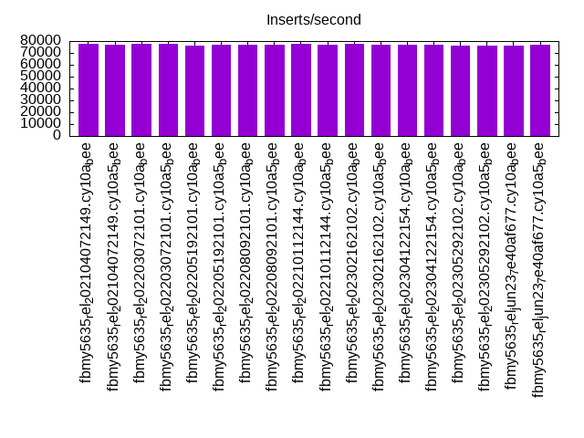
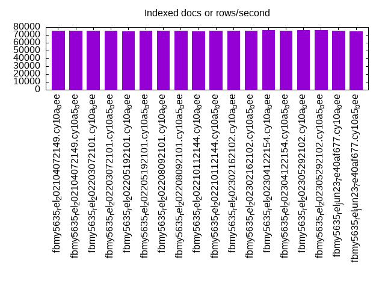
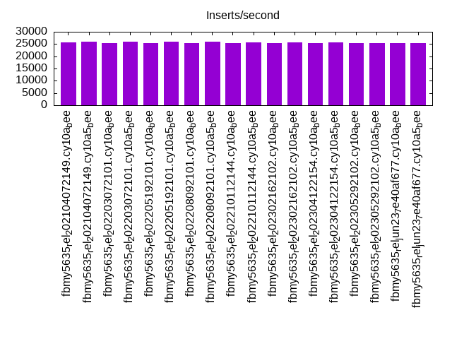
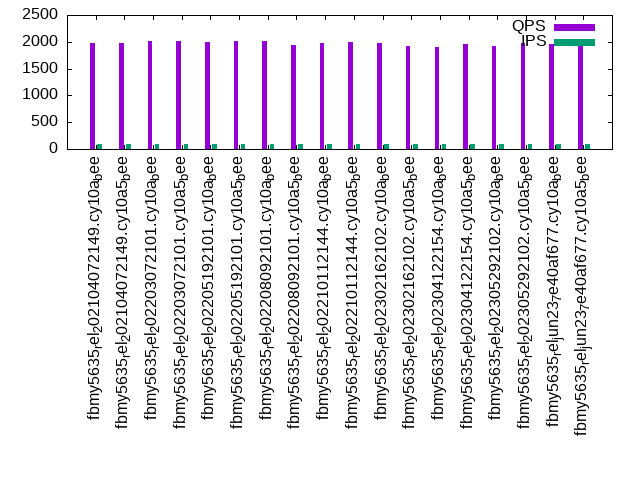
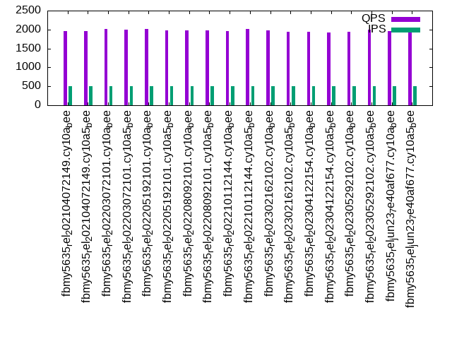
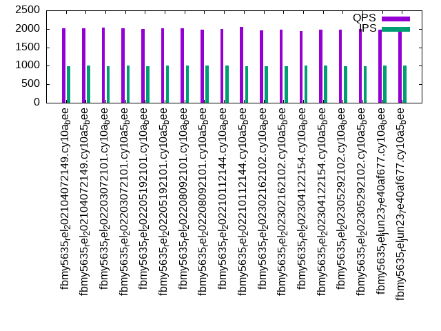

This is a report for the insert benchmark with 800M docs and 1 client(s). It is generated by scripts (bash, awk, sed) and Tufte might not be impressed. An overview of the insert benchmark is here and a short update is here. Below, by DBMS, I mean DBMS+version.config. An example is my8020.c10b40 where my means MySQL, 8020 is version 8.0.20 and c10b40 is the name for the configuration file.
The test server has 8 AMD cores, 16G RAM and an NVMe SSD. It is described here as the Beelink. The benchmark was run with 1 client and there were 1 or 3 connections per client (1 for queries or inserts without rate limits, 1+1 for rate limited inserts+deletes). It uses 1 table. It loads 800M rows per table without secondary indexes, creates secondary indexes, then inserts 100M rows per table with a delete per insert to avoid growing the table. It then does 3 read+write tests for 3600s each that do queries as fast as possible with 100, 500 and then 1000 inserts/second/client concurrent with the queries and 1000 deletes/second to avoid growing the table. The database is larger than RAM. Clients and the DBMS share one server. The per-database configs are in the per-database subdirectories here.
The tested DBMS are:
The numbers are inserts/s for l.i0 and l.i1, indexed docs (or rows) /s for l.x and queries/s for q*.2. The values are the average rate over the entire test for inserts (IPS) and queries (QPS). The range of values for IPS and QPS is split into 3 parts: bottom 25%, middle 50%, top 25%. Values in the bottom 25% have a red background, values in the top 25% have a green background and values in the middle have no color. A gray background is used for values that can be ignored because the DBMS did not sustain the target insert rate. Red backgrounds are not used when the minimum value is within 80% of the max value.
| dbms | l.i0 | l.x | l.i1 | q100.1 | q500.1 | q1000.1 |
|---|---|---|---|---|---|---|
| fbmy5635_rel_202104072149.cy10a_bee | 77317 | 75552 | 25602 | 1969 | 1963 | 2006 |
| fbmy5635_rel_202104072149.cy10a5_bee | 77228 | 75403 | 25913 | 1971 | 1960 | 2014 |
| fbmy5635_rel_202203072101.cy10a_bee | 77310 | 75035 | 25471 | 2017 | 2017 | 2027 |
| fbmy5635_rel_202203072101.cy10a5_bee | 77776 | 75325 | 25920 | 2021 | 2005 | 2012 |
| fbmy5635_rel_202205192101.cy10a_bee | 76118 | 74937 | 25484 | 1995 | 2008 | 1995 |
| fbmy5635_rel_202205192101.cy10a5_bee | 77228 | 75474 | 25840 | 2024 | 1979 | 2022 |
| fbmy5635_rel_202208092101.cy10a_bee | 76982 | 75417 | 25471 | 2023 | 1986 | 2007 |
| fbmy5635_rel_202208092101.cy10a5_bee | 77250 | 75212 | 25840 | 1949 | 1984 | 1985 |
| fbmy5635_rel_202210112144.cy10a_bee | 77504 | 74986 | 25452 | 1978 | 1965 | 1987 |
| fbmy5635_rel_202210112144.cy10a5_bee | 76967 | 75753 | 25773 | 2002 | 2024 | 2051 |
| fbmy5635_rel_202302162102.cy10a_bee | 78003 | 75410 | 25342 | 1970 | 1982 | 1955 |
| fbmy5635_rel_202302162102.cy10a5_bee | 76908 | 75417 | 25588 | 1930 | 1940 | 1972 |
| fbmy5635_rel_202304122154.cy10a_bee | 76864 | 75868 | 25413 | 1895 | 1934 | 1948 |
| fbmy5635_rel_202304122154.cy10a5_bee | 77265 | 75738 | 25562 | 1956 | 1922 | 1984 |
| fbmy5635_rel_202305292102.cy10a_bee | 76482 | 76280 | 25523 | 1925 | 1946 | 1986 |
| fbmy5635_rel_202305292102.cy10a5_bee | 75944 | 75860 | 25381 | 1972 | 1997 | 1987 |
| fbmy5635_rel_jun23_7e40af677.cy10a_bee | 76031 | 75367 | 25310 | 1967 | 1966 | 1974 |
| fbmy5635_rel_jun23_7e40af677.cy10a5_bee | 77064 | 74783 | 25394 | 1960 | 1920 | 1978 |
This table has relative throughput, throughput for the DBMS relative to the DBMS in the first line, using the absolute throughput from the previous table. Values less than 0.95 have a yellow background. Values greater than 1.05 have a blue background.
| dbms | l.i0 | l.x | l.i1 | q100.1 | q500.1 | q1000.1 |
|---|---|---|---|---|---|---|
| fbmy5635_rel_202104072149.cy10a_bee | 1.00 | 1.00 | 1.00 | 1.00 | 1.00 | 1.00 |
| fbmy5635_rel_202104072149.cy10a5_bee | 1.00 | 1.00 | 1.01 | 1.00 | 1.00 | 1.00 |
| fbmy5635_rel_202203072101.cy10a_bee | 1.00 | 0.99 | 0.99 | 1.02 | 1.03 | 1.01 |
| fbmy5635_rel_202203072101.cy10a5_bee | 1.01 | 1.00 | 1.01 | 1.03 | 1.02 | 1.00 |
| fbmy5635_rel_202205192101.cy10a_bee | 0.98 | 0.99 | 1.00 | 1.01 | 1.02 | 0.99 |
| fbmy5635_rel_202205192101.cy10a5_bee | 1.00 | 1.00 | 1.01 | 1.03 | 1.01 | 1.01 |
| fbmy5635_rel_202208092101.cy10a_bee | 1.00 | 1.00 | 0.99 | 1.03 | 1.01 | 1.00 |
| fbmy5635_rel_202208092101.cy10a5_bee | 1.00 | 1.00 | 1.01 | 0.99 | 1.01 | 0.99 |
| fbmy5635_rel_202210112144.cy10a_bee | 1.00 | 0.99 | 0.99 | 1.00 | 1.00 | 0.99 |
| fbmy5635_rel_202210112144.cy10a5_bee | 1.00 | 1.00 | 1.01 | 1.02 | 1.03 | 1.02 |
| fbmy5635_rel_202302162102.cy10a_bee | 1.01 | 1.00 | 0.99 | 1.00 | 1.01 | 0.97 |
| fbmy5635_rel_202302162102.cy10a5_bee | 0.99 | 1.00 | 1.00 | 0.98 | 0.99 | 0.98 |
| fbmy5635_rel_202304122154.cy10a_bee | 0.99 | 1.00 | 0.99 | 0.96 | 0.99 | 0.97 |
| fbmy5635_rel_202304122154.cy10a5_bee | 1.00 | 1.00 | 1.00 | 0.99 | 0.98 | 0.99 |
| fbmy5635_rel_202305292102.cy10a_bee | 0.99 | 1.01 | 1.00 | 0.98 | 0.99 | 0.99 |
| fbmy5635_rel_202305292102.cy10a5_bee | 0.98 | 1.00 | 0.99 | 1.00 | 1.02 | 0.99 |
| fbmy5635_rel_jun23_7e40af677.cy10a_bee | 0.98 | 1.00 | 0.99 | 1.00 | 1.00 | 0.98 |
| fbmy5635_rel_jun23_7e40af677.cy10a5_bee | 1.00 | 0.99 | 0.99 | 1.00 | 0.98 | 0.99 |
This lists the average rate of inserts/s for the tests that do inserts concurrent with queries. For such tests the query rate is listed in the table above. The read+write tests are setup so that the insert rate should match the target rate every second. Cells that are not at least 95% of the target have a red background to indicate a failure to satisfy the target.
| dbms | q100.1 | q500.1 | q1000.1 |
|---|---|---|---|
| fbmy5635_rel_202104072149.cy10a_bee | 100 | 499 | 998 |
| fbmy5635_rel_202104072149.cy10a5_bee | 100 | 499 | 999 |
| fbmy5635_rel_202203072101.cy10a_bee | 100 | 499 | 998 |
| fbmy5635_rel_202203072101.cy10a5_bee | 100 | 499 | 999 |
| fbmy5635_rel_202205192101.cy10a_bee | 100 | 499 | 998 |
| fbmy5635_rel_202205192101.cy10a5_bee | 100 | 499 | 999 |
| fbmy5635_rel_202208092101.cy10a_bee | 100 | 499 | 999 |
| fbmy5635_rel_202208092101.cy10a5_bee | 100 | 499 | 999 |
| fbmy5635_rel_202210112144.cy10a_bee | 100 | 499 | 999 |
| fbmy5635_rel_202210112144.cy10a5_bee | 100 | 499 | 998 |
| fbmy5635_rel_202302162102.cy10a_bee | 100 | 499 | 998 |
| fbmy5635_rel_202302162102.cy10a5_bee | 100 | 499 | 998 |
| fbmy5635_rel_202304122154.cy10a_bee | 100 | 499 | 999 |
| fbmy5635_rel_202304122154.cy10a5_bee | 100 | 499 | 999 |
| fbmy5635_rel_202305292102.cy10a_bee | 100 | 499 | 998 |
| fbmy5635_rel_202305292102.cy10a5_bee | 100 | 499 | 998 |
| fbmy5635_rel_jun23_7e40af677.cy10a_bee | 100 | 499 | 999 |
| fbmy5635_rel_jun23_7e40af677.cy10a5_bee | 100 | 499 | 999 |
| target | 100 | 500 | 1000 |
l.i0: load without secondary indexes. Graphs for performance per 1-second interval are here.
Average throughput:
Insert response time histogram: each cell has the percentage of responses that take <= the time in the header and max is the max response time in seconds. For the max column values in the top 25% of the range have a red background and in the bottom 25% of the range have a green background. The red background is not used when the min value is within 80% of the max value.
| dbms | 256us | 1ms | 4ms | 16ms | 64ms | 256ms | 1s | 4s | 16s | gt | max |
|---|---|---|---|---|---|---|---|---|---|---|---|
| fbmy5635_rel_202104072149.cy10a_bee | 99.867 | 0.129 | 0.003 | 0.001 | 0.095 | ||||||
| fbmy5635_rel_202104072149.cy10a5_bee | 99.867 | 0.129 | 0.003 | 0.001 | 0.087 | ||||||
| fbmy5635_rel_202203072101.cy10a_bee | 99.867 | 0.129 | 0.003 | 0.001 | 0.098 | ||||||
| fbmy5635_rel_202203072101.cy10a5_bee | 99.868 | 0.128 | 0.003 | 0.001 | 0.106 | ||||||
| fbmy5635_rel_202205192101.cy10a_bee | 99.865 | 0.131 | 0.002 | 0.002 | 0.102 | ||||||
| fbmy5635_rel_202205192101.cy10a5_bee | 99.867 | 0.129 | 0.003 | 0.001 | 0.113 | ||||||
| fbmy5635_rel_202208092101.cy10a_bee | 99.867 | 0.129 | 0.002 | 0.001 | 0.103 | ||||||
| fbmy5635_rel_202208092101.cy10a5_bee | 99.867 | 0.129 | 0.002 | 0.002 | 0.133 | ||||||
| fbmy5635_rel_202210112144.cy10a_bee | 99.868 | 0.128 | 0.002 | 0.002 | 0.095 | ||||||
| fbmy5635_rel_202210112144.cy10a5_bee | 99.867 | 0.129 | 0.002 | 0.002 | 0.099 | ||||||
| fbmy5635_rel_202302162102.cy10a_bee | 99.869 | 0.127 | 0.003 | 0.001 | 0.116 | ||||||
| fbmy5635_rel_202302162102.cy10a5_bee | 99.867 | 0.129 | 0.003 | 0.001 | 0.115 | ||||||
| fbmy5635_rel_202304122154.cy10a_bee | 99.867 | 0.129 | 0.003 | 0.001 | 0.081 | ||||||
| fbmy5635_rel_202304122154.cy10a5_bee | 99.868 | 0.128 | 0.003 | 0.001 | 0.091 | ||||||
| fbmy5635_rel_202305292102.cy10a_bee | 99.866 | 0.130 | 0.003 | 0.001 | 0.096 | ||||||
| fbmy5635_rel_202305292102.cy10a5_bee | 99.865 | 0.131 | 0.003 | 0.001 | 0.089 | ||||||
| fbmy5635_rel_jun23_7e40af677.cy10a_bee | 99.865 | 0.130 | 0.003 | 0.001 | 0.093 | ||||||
| fbmy5635_rel_jun23_7e40af677.cy10a5_bee | 99.867 | 0.129 | 0.003 | 0.001 | 0.082 |
Performance metrics for the DBMS listed above. Some are normalized by throughput, others are not. Legend for results is here.
ips qps rps rmbps wps wmbps rpq rkbpq wpi wkbpi csps cpups cspq cpupq dbgb1 dbgb2 rss maxop p50 p99 tag 77317 0 0 0.0 43.9 13.9 0.000 0.000 0.001 0.184 7683 22.4 0.099 23 25.1 25.7 1.5 0.095 77609 71116 800m.fbmy5635_rel_202104072149.cy10a_bee 77228 0 0 0.0 43.7 13.9 0.000 0.000 0.001 0.184 7685 22.3 0.100 23 25.1 25.7 1.5 0.087 77511 71122 800m.fbmy5635_rel_202104072149.cy10a5_bee 77310 0 0 0.0 43.9 13.9 0.000 0.000 0.001 0.184 7815 22.5 0.101 23 25.1 25.7 1.5 0.098 77610 70822 800m.fbmy5635_rel_202203072101.cy10a_bee 77776 0 0 0.0 44.1 14.0 0.000 0.000 0.001 0.184 7728 22.7 0.099 23 25.1 25.7 1.5 0.106 78014 71718 800m.fbmy5635_rel_202203072101.cy10a5_bee 76118 0 0 0.0 43.2 13.7 0.000 0.000 0.001 0.184 7562 21.3 0.099 22 25.1 25.7 1.5 0.102 76312 69621 800m.fbmy5635_rel_202205192101.cy10a_bee 77228 0 0 0.0 43.9 13.9 0.000 0.000 0.001 0.184 7674 22.3 0.099 23 25.1 25.7 1.5 0.113 77510 70719 800m.fbmy5635_rel_202205192101.cy10a5_bee 76982 0 0 0.0 43.8 13.8 0.000 0.000 0.001 0.184 7651 22.2 0.099 23 25.1 25.7 1.5 0.103 77212 70519 800m.fbmy5635_rel_202208092101.cy10a_bee 77250 0 0 0.0 43.7 13.9 0.000 0.000 0.001 0.184 7685 22.4 0.099 23 25.1 25.7 1.5 0.133 77512 70722 800m.fbmy5635_rel_202208092101.cy10a5_bee 77504 0 0 0.0 44.0 13.9 0.000 0.000 0.001 0.184 7697 22.4 0.099 23 25.1 25.7 1.5 0.095 77810 70722 800m.fbmy5635_rel_202210112144.cy10a_bee 76967 0 0 0.0 43.5 13.8 0.000 0.000 0.001 0.184 7650 22.0 0.099 23 25.1 25.7 1.5 0.099 77212 70322 800m.fbmy5635_rel_202210112144.cy10a5_bee 78003 0 0 0.0 42.3 14.0 0.000 0.000 0.001 0.184 7751 22.9 0.099 23 25.1 25.7 1.5 0.116 78309 71822 800m.fbmy5635_rel_202302162102.cy10a_bee 76908 0 0 0.0 41.7 13.8 0.000 0.000 0.001 0.184 7624 22.3 0.099 23 25.1 25.7 1.5 0.115 77112 70921 800m.fbmy5635_rel_202302162102.cy10a5_bee 76864 0 0 0.0 41.7 13.8 0.000 0.000 0.001 0.184 7630 22.2 0.099 23 25.1 25.7 1.5 0.081 77111 70819 800m.fbmy5635_rel_202304122154.cy10a_bee 77265 0 0 0.0 42.0 13.9 0.000 0.000 0.001 0.184 7665 22.3 0.099 23 25.1 25.7 1.5 0.091 77512 71312 800m.fbmy5635_rel_202304122154.cy10a5_bee 76482 0 0 0.0 41.5 13.8 0.000 0.000 0.001 0.184 7590 21.9 0.099 23 25.1 25.7 1.5 0.096 76711 70619 800m.fbmy5635_rel_202305292102.cy10a_bee 75944 0 0 0.0 41.2 13.7 0.000 0.000 0.001 0.184 7546 21.3 0.099 22 25.1 25.7 1.5 0.089 76110 69922 800m.fbmy5635_rel_202305292102.cy10a5_bee 76031 0 0 0.0 41.4 13.7 0.000 0.000 0.001 0.184 7547 21.5 0.099 23 25.1 25.7 1.5 0.093 76212 70123 800m.fbmy5635_rel_jun23_7e40af677.cy10a_bee 77064 0 0 0.0 41.9 13.9 0.000 0.000 0.001 0.184 7660 22.3 0.099 23 25.1 25.7 1.5 0.082 77311 71219 800m.fbmy5635_rel_jun23_7e40af677.cy10a5_bee
l.x: create secondary indexes.
Average throughput:
Performance metrics for the DBMS listed above. Some are normalized by throughput, others are not. Legend for results is here.
ips qps rps rmbps wps wmbps rpq rkbpq wpi wkbpi csps cpups cspq cpupq dbgb1 dbgb2 rss maxop p50 p99 tag 75552 0 100 15.8 33.5 11.0 0.001 0.214 0.000 0.150 347 11.7 0.005 12 51.1 51.7 8.8 0.008 NA NA 800m.fbmy5635_rel_202104072149.cy10a_bee 75403 0 100 15.8 32.4 11.0 0.001 0.214 0.000 0.150 348 11.7 0.005 12 51.1 51.7 8.7 0.009 NA NA 800m.fbmy5635_rel_202104072149.cy10a5_bee 75035 0 100 15.7 32.6 11.0 0.001 0.214 0.000 0.150 540 12.0 0.007 13 51.1 51.7 8.7 0.008 NA NA 800m.fbmy5635_rel_202203072101.cy10a_bee 75325 0 100 15.8 32.8 11.0 0.001 0.214 0.000 0.150 343 11.7 0.005 12 51.1 51.7 8.8 0.008 NA NA 800m.fbmy5635_rel_202203072101.cy10a5_bee 74937 0 100 15.7 32.3 10.9 0.001 0.214 0.000 0.150 344 11.7 0.005 12 51.0 51.7 8.8 0.012 NA NA 800m.fbmy5635_rel_202205192101.cy10a_bee 75474 0 100 15.8 32.9 11.0 0.001 0.214 0.000 0.150 346 11.7 0.005 12 51.1 51.7 8.8 0.008 NA NA 800m.fbmy5635_rel_202205192101.cy10a5_bee 75417 0 100 15.8 32.5 11.0 0.001 0.214 0.000 0.150 341 11.7 0.005 12 51.1 51.7 8.8 0.013 NA NA 800m.fbmy5635_rel_202208092101.cy10a_bee 75212 0 100 15.7 32.5 11.0 0.001 0.214 0.000 0.150 339 11.7 0.005 12 51.1 51.7 8.8 0.008 NA NA 800m.fbmy5635_rel_202208092101.cy10a5_bee 74986 0 100 15.7 33.3 11.0 0.001 0.214 0.000 0.150 338 11.7 0.005 12 51.1 51.7 8.8 0.007 NA NA 800m.fbmy5635_rel_202210112144.cy10a_bee 75753 0 101 15.8 33.6 11.1 0.001 0.214 0.000 0.150 345 11.7 0.005 12 51.0 51.7 8.8 0.007 NA NA 800m.fbmy5635_rel_202210112144.cy10a5_bee 75410 0 100 15.8 30.7 11.0 0.001 0.214 0.000 0.150 314 11.7 0.004 12 51.0 51.7 8.8 0.007 NA NA 800m.fbmy5635_rel_202302162102.cy10a_bee 75417 0 100 15.8 31.4 11.0 0.001 0.214 0.000 0.150 290 11.7 0.004 12 51.0 51.7 8.8 0.007 NA NA 800m.fbmy5635_rel_202302162102.cy10a5_bee 75868 0 101 15.9 30.4 11.1 0.001 0.214 0.000 0.150 293 11.7 0.004 12 51.0 51.7 8.8 0.008 NA NA 800m.fbmy5635_rel_202304122154.cy10a_bee 75738 0 101 15.8 30.0 11.1 0.001 0.214 0.000 0.149 305 11.7 0.004 12 51.0 51.7 8.8 0.008 NA NA 800m.fbmy5635_rel_202304122154.cy10a5_bee 76280 0 101 15.9 31.1 11.1 0.001 0.214 0.000 0.149 295 11.7 0.004 12 51.0 51.7 8.8 0.006 NA NA 800m.fbmy5635_rel_202305292102.cy10a_bee 75860 0 101 15.9 30.1 11.1 0.001 0.214 0.000 0.149 298 11.7 0.004 12 51.0 51.7 8.8 0.009 NA NA 800m.fbmy5635_rel_202305292102.cy10a5_bee 75367 0 100 15.8 30.6 11.0 0.001 0.214 0.000 0.149 293 11.7 0.004 12 51.0 51.7 8.8 0.007 NA NA 800m.fbmy5635_rel_jun23_7e40af677.cy10a_bee 74783 0 99 15.6 30.4 10.9 0.001 0.214 0.000 0.150 297 11.7 0.004 13 51.0 51.7 8.8 0.007 NA NA 800m.fbmy5635_rel_jun23_7e40af677.cy10a5_bee
l.i1: continue load after secondary indexes created. Graphs for performance per 1-second interval are here.
Average throughput:
Insert response time histogram: each cell has the percentage of responses that take <= the time in the header and max is the max response time in seconds. For the max column values in the top 25% of the range have a red background and in the bottom 25% of the range have a green background. The red background is not used when the min value is within 80% of the max value.
| dbms | 256us | 1ms | 4ms | 16ms | 64ms | 256ms | 1s | 4s | 16s | gt | max |
|---|---|---|---|---|---|---|---|---|---|---|---|
| fbmy5635_rel_202104072149.cy10a_bee | 99.783 | 0.212 | 0.003 | 0.003 | 0.125 | ||||||
| fbmy5635_rel_202104072149.cy10a5_bee | 99.769 | 0.226 | 0.003 | 0.003 | 0.135 | ||||||
| fbmy5635_rel_202203072101.cy10a_bee | 99.778 | 0.215 | 0.005 | 0.002 | 0.134 | ||||||
| fbmy5635_rel_202203072101.cy10a5_bee | 99.779 | 0.215 | 0.003 | 0.003 | 0.124 | ||||||
| fbmy5635_rel_202205192101.cy10a_bee | 99.782 | 0.211 | 0.004 | 0.003 | 0.115 | ||||||
| fbmy5635_rel_202205192101.cy10a5_bee | 99.781 | 0.212 | 0.004 | 0.003 | 0.140 | ||||||
| fbmy5635_rel_202208092101.cy10a_bee | 99.780 | 0.214 | 0.003 | 0.003 | 0.133 | ||||||
| fbmy5635_rel_202208092101.cy10a5_bee | 99.769 | 0.225 | 0.003 | 0.003 | 0.154 | ||||||
| fbmy5635_rel_202210112144.cy10a_bee | 99.771 | 0.221 | 0.005 | 0.003 | 0.133 | ||||||
| fbmy5635_rel_202210112144.cy10a5_bee | 99.770 | 0.222 | 0.004 | 0.003 | 0.134 | ||||||
| fbmy5635_rel_202302162102.cy10a_bee | 99.781 | 0.212 | 0.005 | 0.002 | 0.204 | ||||||
| fbmy5635_rel_202302162102.cy10a5_bee | 99.784 | 0.210 | 0.005 | 0.001 | 0.113 | ||||||
| fbmy5635_rel_202304122154.cy10a_bee | 99.781 | 0.213 | 0.005 | 0.002 | 0.120 | ||||||
| fbmy5635_rel_202304122154.cy10a5_bee | 99.771 | 0.223 | 0.005 | 0.002 | 0.141 | ||||||
| fbmy5635_rel_202305292102.cy10a_bee | 99.770 | 0.223 | 0.006 | 0.001 | 0.108 | ||||||
| fbmy5635_rel_202305292102.cy10a5_bee | 99.779 | 0.215 | 0.005 | 0.002 | 0.102 | ||||||
| fbmy5635_rel_jun23_7e40af677.cy10a_bee | 99.779 | 0.215 | 0.005 | 0.002 | 0.127 | ||||||
| fbmy5635_rel_jun23_7e40af677.cy10a5_bee | 99.770 | 0.223 | 0.005 | 0.002 | 0.129 |
Delete response time histogram: each cell has the percentage of responses that take <= the time in the header and max is the max response time in seconds. For the max column values in the top 25% of the range have a red background and in the bottom 25% of the range have a green background. The red background is not used when the min value is within 80% of the max value.
| dbms | 256us | 1ms | 4ms | 16ms | 64ms | 256ms | 1s | 4s | 16s | gt | max |
|---|---|---|---|---|---|---|---|---|---|---|---|
| fbmy5635_rel_202104072149.cy10a_bee | 99.720 | 0.270 | 0.007 | 0.003 | 0.126 | ||||||
| fbmy5635_rel_202104072149.cy10a5_bee | 99.724 | 0.264 | 0.009 | 0.003 | 0.136 | ||||||
| fbmy5635_rel_202203072101.cy10a_bee | 99.701 | 0.287 | 0.010 | 0.002 | 0.133 | ||||||
| fbmy5635_rel_202203072101.cy10a5_bee | 99.701 | 0.286 | 0.010 | 0.003 | 0.124 | ||||||
| fbmy5635_rel_202205192101.cy10a_bee | 99.694 | 0.294 | 0.010 | 0.003 | 0.114 | ||||||
| fbmy5635_rel_202205192101.cy10a5_bee | 99.694 | 0.294 | 0.010 | 0.003 | 0.140 | ||||||
| fbmy5635_rel_202208092101.cy10a_bee | 99.689 | 0.299 | 0.009 | 0.003 | 0.133 | ||||||
| fbmy5635_rel_202208092101.cy10a5_bee | 99.700 | 0.288 | 0.009 | 0.003 | 0.153 | ||||||
| fbmy5635_rel_202210112144.cy10a_bee | 99.705 | 0.282 | 0.010 | 0.003 | 0.134 | ||||||
| fbmy5635_rel_202210112144.cy10a5_bee | 99.693 | 0.294 | 0.010 | 0.003 | 0.134 | ||||||
| fbmy5635_rel_202302162102.cy10a_bee | 99.708 | 0.282 | 0.009 | 0.002 | 0.203 | ||||||
| fbmy5635_rel_202302162102.cy10a5_bee | 99.712 | 0.278 | 0.008 | 0.002 | 0.113 | ||||||
| fbmy5635_rel_202304122154.cy10a_bee | 99.711 | 0.278 | 0.009 | 0.002 | 0.119 | ||||||
| fbmy5635_rel_202304122154.cy10a5_bee | 99.721 | 0.269 | 0.009 | 0.002 | 0.140 | ||||||
| fbmy5635_rel_202305292102.cy10a_bee | 99.720 | 0.270 | 0.009 | 0.001 | 0.107 | ||||||
| fbmy5635_rel_202305292102.cy10a5_bee | 99.712 | 0.278 | 0.008 | 0.002 | 0.102 | ||||||
| fbmy5635_rel_jun23_7e40af677.cy10a_bee | 99.713 | 0.277 | 0.008 | 0.002 | 0.127 | ||||||
| fbmy5635_rel_jun23_7e40af677.cy10a5_bee | 99.727 | 0.263 | 0.008 | 0.002 | 0.129 |
Performance metrics for the DBMS listed above. Some are normalized by throughput, others are not. Legend for results is here.
ips qps rps rmbps wps wmbps rpq rkbpq wpi wkbpi csps cpups cspq cpupq dbgb1 dbgb2 rss maxop p50 p99 tag 25602 0 430 33.5 195.8 72.1 0.017 1.340 0.008 2.883 11458 53.9 0.448 168 58.1 58.1 8.6 0.125 25621 22424 800m.fbmy5635_rel_202104072149.cy10a_bee 25913 0 421 32.2 197.6 74.6 0.016 1.273 0.008 2.947 11482 55.4 0.443 171 58.4 58.4 8.6 0.135 25933 22874 800m.fbmy5635_rel_202104072149.cy10a5_bee 25471 0 432 33.9 192.8 72.0 0.017 1.362 0.008 2.896 11587 53.7 0.455 169 57.7 57.7 8.6 0.134 25472 22224 800m.fbmy5635_rel_202203072101.cy10a_bee 25920 0 426 32.9 199.9 76.0 0.016 1.301 0.008 3.004 11523 55.3 0.445 171 58.3 58.3 8.6 0.124 25934 22674 800m.fbmy5635_rel_202203072101.cy10a5_bee 25484 0 430 33.7 190.2 71.5 0.017 1.354 0.007 2.875 11423 53.5 0.448 168 57.9 57.9 8.6 0.115 25521 22276 800m.fbmy5635_rel_202205192101.cy10a_bee 25840 0 402 30.1 198.1 74.8 0.016 1.194 0.008 2.965 11508 55.1 0.445 171 58.2 58.2 8.6 0.140 25821 22625 800m.fbmy5635_rel_202205192101.cy10a5_bee 25471 0 440 34.6 192.7 72.1 0.017 1.393 0.008 2.897 11423 53.8 0.448 169 57.4 57.4 8.6 0.133 25472 22175 800m.fbmy5635_rel_202208092101.cy10a_bee 25840 0 412 31.3 197.8 74.1 0.016 1.239 0.008 2.936 11485 55.1 0.444 171 57.8 57.9 8.6 0.154 25870 22575 800m.fbmy5635_rel_202208092101.cy10a5_bee 25452 0 432 33.9 188.4 69.9 0.017 1.365 0.007 2.813 11374 53.7 0.447 169 57.8 57.8 8.6 0.133 25471 22375 800m.fbmy5635_rel_202210112144.cy10a_bee 25773 0 435 34.0 199.8 74.8 0.017 1.352 0.008 2.974 11472 55.5 0.445 172 57.7 57.7 8.7 0.134 25821 22525 800m.fbmy5635_rel_202210112144.cy10a5_bee 25342 0 376 26.9 163.0 60.7 0.015 1.088 0.006 2.454 11234 53.4 0.443 169 56.8 56.9 8.6 0.204 25322 21685 800m.fbmy5635_rel_202302162102.cy10a_bee 25588 0 368 25.8 161.4 61.0 0.014 1.031 0.006 2.440 11450 52.8 0.447 165 57.7 57.7 8.6 0.113 25671 22025 800m.fbmy5635_rel_202302162102.cy10a5_bee 25413 0 366 25.6 158.2 60.2 0.014 1.033 0.006 2.425 11294 52.7 0.444 166 57.2 57.2 8.6 0.120 25471 21776 800m.fbmy5635_rel_202304122154.cy10a_bee 25562 0 374 26.5 161.0 60.6 0.015 1.060 0.006 2.428 11421 52.6 0.447 165 57.8 57.8 8.6 0.141 25570 21926 800m.fbmy5635_rel_202304122154.cy10a5_bee 25523 0 378 27.0 159.5 60.0 0.015 1.084 0.006 2.409 11300 53.5 0.443 168 57.4 57.5 8.6 0.108 25535 21876 800m.fbmy5635_rel_202305292102.cy10a_bee 25381 0 378 27.0 159.9 60.3 0.015 1.091 0.006 2.434 11340 52.9 0.447 167 57.1 57.1 8.6 0.102 25422 21676 800m.fbmy5635_rel_202305292102.cy10a5_bee 25310 0 365 25.6 159.9 60.5 0.014 1.035 0.006 2.450 11311 53.6 0.447 169 57.1 57.1 8.6 0.127 25322 21825 800m.fbmy5635_rel_jun23_7e40af677.cy10a_bee 25394 0 369 26.0 159.1 59.9 0.015 1.050 0.006 2.415 11301 53.0 0.445 167 57.9 57.9 8.7 0.129 25422 21975 800m.fbmy5635_rel_jun23_7e40af677.cy10a5_bee
q100.1: range queries with 100 insert/s per client. Graphs for performance per 1-second interval are here.
Average throughput:
Query response time histogram: each cell has the percentage of responses that take <= the time in the header and max is the max response time in seconds. For max values in the top 25% of the range have a red background and in the bottom 25% of the range have a green background. The red background is not used when the min value is within 80% of the max value.
| dbms | 256us | 1ms | 4ms | 16ms | 64ms | 256ms | 1s | 4s | 16s | gt | max |
|---|---|---|---|---|---|---|---|---|---|---|---|
| fbmy5635_rel_202104072149.cy10a_bee | 1.761 | 95.632 | 2.590 | 0.017 | nonzero | 0.061 | |||||
| fbmy5635_rel_202104072149.cy10a5_bee | 2.038 | 95.272 | 2.682 | 0.008 | nonzero | 0.063 | |||||
| fbmy5635_rel_202203072101.cy10a_bee | 3.329 | 94.071 | 2.582 | 0.018 | nonzero | nonzero | 0.068 | ||||
| fbmy5635_rel_202203072101.cy10a5_bee | 2.572 | 94.973 | 2.445 | 0.010 | nonzero | 0.042 | |||||
| fbmy5635_rel_202205192101.cy10a_bee | 2.317 | 95.397 | 2.266 | 0.020 | nonzero | 0.053 | |||||
| fbmy5635_rel_202205192101.cy10a5_bee | 2.223 | 95.583 | 2.179 | 0.014 | nonzero | 0.043 | |||||
| fbmy5635_rel_202208092101.cy10a_bee | 2.029 | 95.631 | 2.328 | 0.012 | nonzero | 0.054 | |||||
| fbmy5635_rel_202208092101.cy10a5_bee | 1.509 | 95.499 | 2.977 | 0.015 | nonzero | 0.050 | |||||
| fbmy5635_rel_202210112144.cy10a_bee | 2.011 | 95.126 | 2.844 | 0.018 | 0.001 | 0.057 | |||||
| fbmy5635_rel_202210112144.cy10a5_bee | 2.159 | 95.306 | 2.522 | 0.012 | nonzero | 0.058 | |||||
| fbmy5635_rel_202302162102.cy10a_bee | 1.989 | 92.655 | 5.344 | 0.012 | nonzero | 0.046 | |||||
| fbmy5635_rel_202302162102.cy10a5_bee | 2.193 | 91.186 | 6.608 | 0.013 | nonzero | 0.039 | |||||
| fbmy5635_rel_202304122154.cy10a_bee | 2.010 | 91.056 | 6.923 | 0.011 | 0.001 | 0.058 | |||||
| fbmy5635_rel_202304122154.cy10a5_bee | 2.054 | 92.119 | 5.817 | 0.009 | 0.001 | 0.048 | |||||
| fbmy5635_rel_202305292102.cy10a_bee | 1.712 | 92.074 | 6.205 | 0.009 | 0.001 | 0.048 | |||||
| fbmy5635_rel_202305292102.cy10a5_bee | 1.896 | 92.465 | 5.632 | 0.007 | nonzero | 0.038 | |||||
| fbmy5635_rel_jun23_7e40af677.cy10a_bee | 1.779 | 93.312 | 4.900 | 0.009 | nonzero | 0.039 | |||||
| fbmy5635_rel_jun23_7e40af677.cy10a5_bee | 1.938 | 93.040 | 5.009 | 0.012 | nonzero | 0.056 |
Insert response time histogram: each cell has the percentage of responses that take <= the time in the header and max is the max response time in seconds. For max values in the top 25% of the range have a red background and in the bottom 25% of the range have a green background. The red background is not used when the min value is within 80% of the max value.
| dbms | 256us | 1ms | 4ms | 16ms | 64ms | 256ms | 1s | 4s | 16s | gt | max |
|---|---|---|---|---|---|---|---|---|---|---|---|
| fbmy5635_rel_202104072149.cy10a_bee | 99.333 | 0.653 | 0.014 | 0.041 | |||||||
| fbmy5635_rel_202104072149.cy10a5_bee | 99.333 | 0.667 | 0.015 | ||||||||
| fbmy5635_rel_202203072101.cy10a_bee | 99.417 | 0.569 | 0.014 | 0.016 | |||||||
| fbmy5635_rel_202203072101.cy10a5_bee | 99.458 | 0.528 | 0.014 | 0.018 | |||||||
| fbmy5635_rel_202205192101.cy10a_bee | 99.181 | 0.819 | 0.015 | ||||||||
| fbmy5635_rel_202205192101.cy10a5_bee | 99.306 | 0.694 | 0.012 | ||||||||
| fbmy5635_rel_202208092101.cy10a_bee | 99.361 | 0.639 | 0.015 | ||||||||
| fbmy5635_rel_202208092101.cy10a5_bee | 99.208 | 0.778 | 0.014 | 0.017 | |||||||
| fbmy5635_rel_202210112144.cy10a_bee | 99.389 | 0.611 | 0.015 | ||||||||
| fbmy5635_rel_202210112144.cy10a5_bee | 99.333 | 0.667 | 0.015 | ||||||||
| fbmy5635_rel_202302162102.cy10a_bee | 99.403 | 0.569 | 0.028 | 0.047 | |||||||
| fbmy5635_rel_202302162102.cy10a5_bee | 99.264 | 0.722 | 0.014 | 0.016 | |||||||
| fbmy5635_rel_202304122154.cy10a_bee | 99.403 | 0.583 | 0.014 | 0.016 | |||||||
| fbmy5635_rel_202304122154.cy10a5_bee | 99.444 | 0.556 | 0.011 | ||||||||
| fbmy5635_rel_202305292102.cy10a_bee | 99.403 | 0.597 | 0.014 | ||||||||
| fbmy5635_rel_202305292102.cy10a5_bee | 99.306 | 0.694 | 0.016 | ||||||||
| fbmy5635_rel_jun23_7e40af677.cy10a_bee | 99.389 | 0.611 | 0.016 | ||||||||
| fbmy5635_rel_jun23_7e40af677.cy10a5_bee | 99.375 | 0.625 | 0.016 |
Delete response time histogram: each cell has the percentage of responses that take <= the time in the header and max is the max response time in seconds. For max values in the top 25% of the range have a red background and in the bottom 25% of the range have a green background. The red background is not used when the min value is within 80% of the max value.
| dbms | 256us | 1ms | 4ms | 16ms | 64ms | 256ms | 1s | 4s | 16s | gt | max |
|---|---|---|---|---|---|---|---|---|---|---|---|
| fbmy5635_rel_202104072149.cy10a_bee | 87.333 | 12.514 | 0.153 | 0.041 | |||||||
| fbmy5635_rel_202104072149.cy10a5_bee | 93.361 | 6.611 | 0.028 | 0.017 | |||||||
| fbmy5635_rel_202203072101.cy10a_bee | 85.306 | 14.542 | 0.153 | 0.025 | |||||||
| fbmy5635_rel_202203072101.cy10a5_bee | 90.028 | 9.764 | 0.208 | 0.022 | |||||||
| fbmy5635_rel_202205192101.cy10a_bee | 85.347 | 14.500 | 0.153 | 0.017 | |||||||
| fbmy5635_rel_202205192101.cy10a5_bee | 87.417 | 12.458 | 0.125 | 0.020 | |||||||
| fbmy5635_rel_202208092101.cy10a_bee | 97.458 | 2.542 | 0.015 | ||||||||
| fbmy5635_rel_202208092101.cy10a5_bee | 83.125 | 16.694 | 0.181 | 0.023 | |||||||
| fbmy5635_rel_202210112144.cy10a_bee | 86.667 | 13.167 | 0.167 | 0.021 | |||||||
| fbmy5635_rel_202210112144.cy10a5_bee | 88.917 | 10.875 | 0.208 | 0.023 | |||||||
| fbmy5635_rel_202302162102.cy10a_bee | 87.361 | 12.458 | 0.181 | 0.047 | |||||||
| fbmy5635_rel_202302162102.cy10a5_bee | 85.889 | 13.875 | 0.236 | 0.023 | |||||||
| fbmy5635_rel_202304122154.cy10a_bee | 86.806 | 12.986 | 0.208 | 0.022 | |||||||
| fbmy5635_rel_202304122154.cy10a5_bee | 89.319 | 10.583 | 0.097 | 0.018 | |||||||
| fbmy5635_rel_202305292102.cy10a_bee | 90.972 | 8.958 | 0.069 | 0.022 | |||||||
| fbmy5635_rel_202305292102.cy10a5_bee | 94.139 | 5.778 | 0.083 | 0.050 | |||||||
| fbmy5635_rel_jun23_7e40af677.cy10a_bee | 86.278 | 13.569 | 0.153 | 0.023 | |||||||
| fbmy5635_rel_jun23_7e40af677.cy10a5_bee | 94.347 | 5.597 | 0.056 | 0.020 |
Performance metrics for the DBMS listed above. Some are normalized by throughput, others are not. Legend for results is here.
ips qps rps rmbps wps wmbps rpq rkbpq wpi wkbpi csps cpups cspq cpupq dbgb1 dbgb2 rss maxop p50 p99 tag 100 1969 274 5.1 12.4 2.7 0.139 2.644 0.124 27.252 8169 13.8 4.148 561 55.6 55.7 9.7 0.061 1965 1326 800m.fbmy5635_rel_202104072149.cy10a_bee 100 1971 320 5.6 11.6 2.3 0.162 2.899 0.116 23.746 8177 13.6 4.148 552 55.7 55.8 10.1 0.063 1982 1326 800m.fbmy5635_rel_202104072149.cy10a5_bee 100 2017 282 4.8 11.6 2.4 0.140 2.428 0.116 24.190 8536 13.6 4.233 539 55.7 55.8 9.7 0.068 2013 1295 800m.fbmy5635_rel_202203072101.cy10a_bee 100 2021 266 4.7 11.5 2.3 0.132 2.400 0.115 23.437 8330 13.5 4.122 534 55.7 55.8 9.4 0.042 2030 1310 800m.fbmy5635_rel_202203072101.cy10a5_bee 100 1995 265 4.8 12.1 2.5 0.133 2.489 0.121 26.116 8253 13.7 4.137 549 55.6 55.7 9.7 0.053 1981 1326 800m.fbmy5635_rel_202205192101.cy10a_bee 100 2024 259 4.6 11.3 2.2 0.128 2.321 0.113 22.472 8335 13.5 4.118 534 55.7 55.8 9.7 0.043 2014 1326 800m.fbmy5635_rel_202205192101.cy10a5_bee 100 2023 270 5.0 11.7 2.4 0.133 2.550 0.118 24.604 8346 13.6 4.125 538 55.6 55.7 9.9 0.054 2061 1295 800m.fbmy5635_rel_202208092101.cy10a_bee 100 1949 271 4.9 11.7 2.3 0.139 2.594 0.117 23.679 8065 13.5 4.137 554 55.7 55.8 10.0 0.050 1933 1310 800m.fbmy5635_rel_202208092101.cy10a5_bee 100 1978 281 5.0 12.0 2.5 0.142 2.598 0.120 25.805 8211 13.6 4.151 550 55.7 55.8 9.7 0.057 1983 1295 800m.fbmy5635_rel_202210112144.cy10a_bee 100 2002 294 5.3 12.1 2.6 0.147 2.707 0.121 26.202 8287 13.5 4.140 540 55.5 55.6 9.9 0.058 1982 1310 800m.fbmy5635_rel_202210112144.cy10a5_bee 100 1970 268 4.1 8.5 2.0 0.136 2.145 0.086 20.555 8149 13.2 4.136 536 55.7 55.8 9.8 0.046 1982 1263 800m.fbmy5635_rel_202302162102.cy10a_bee 100 1930 274 4.2 8.5 2.0 0.142 2.216 0.086 20.303 8001 13.2 4.145 547 55.7 55.8 9.9 0.039 1902 1215 800m.fbmy5635_rel_202302162102.cy10a5_bee 100 1895 268 4.1 8.4 2.0 0.141 2.239 0.084 20.254 7848 13.2 4.141 557 56.0 56.1 9.3 0.058 1886 1247 800m.fbmy5635_rel_202304122154.cy10a_bee 100 1956 273 4.2 8.9 2.1 0.140 2.212 0.089 21.241 8094 13.2 4.138 540 55.7 55.8 9.7 0.048 1949 1279 800m.fbmy5635_rel_202304122154.cy10a5_bee 100 1925 326 5.3 9.4 2.3 0.169 2.803 0.094 23.321 8020 13.5 4.166 561 55.7 55.8 10.0 0.048 1933 1263 800m.fbmy5635_rel_202305292102.cy10a_bee 100 1972 266 4.2 8.2 1.9 0.135 2.171 0.083 19.342 8273 13.4 4.195 544 55.7 55.8 9.8 0.038 1950 1263 800m.fbmy5635_rel_202305292102.cy10a5_bee 100 1967 245 3.6 7.4 1.6 0.125 1.871 0.074 16.282 8082 13.1 4.108 533 55.7 55.8 9.7 0.039 1949 1264 800m.fbmy5635_rel_jun23_7e40af677.cy10a_bee 100 1960 283 4.3 8.6 2.0 0.145 2.263 0.086 20.596 8129 13.3 4.147 543 55.7 55.8 9.8 0.056 1965 1310 800m.fbmy5635_rel_jun23_7e40af677.cy10a5_bee
q500.1: range queries with 500 insert/s per client. Graphs for performance per 1-second interval are here.
Average throughput:
Query response time histogram: each cell has the percentage of responses that take <= the time in the header and max is the max response time in seconds. For max values in the top 25% of the range have a red background and in the bottom 25% of the range have a green background. The red background is not used when the min value is within 80% of the max value.
| dbms | 256us | 1ms | 4ms | 16ms | 64ms | 256ms | 1s | 4s | 16s | gt | max |
|---|---|---|---|---|---|---|---|---|---|---|---|
| fbmy5635_rel_202104072149.cy10a_bee | 0.606 | 96.843 | 2.541 | 0.010 | nonzero | 0.036 | |||||
| fbmy5635_rel_202104072149.cy10a5_bee | 1.042 | 96.394 | 2.551 | 0.013 | 0.015 | ||||||
| fbmy5635_rel_202203072101.cy10a_bee | 1.424 | 96.301 | 2.264 | 0.012 | nonzero | 0.046 | |||||
| fbmy5635_rel_202203072101.cy10a5_bee | 1.030 | 96.601 | 2.355 | 0.014 | nonzero | 0.018 | |||||
| fbmy5635_rel_202205192101.cy10a_bee | 1.019 | 96.817 | 2.153 | 0.010 | nonzero | 0.038 | |||||
| fbmy5635_rel_202205192101.cy10a5_bee | 0.753 | 96.704 | 2.527 | 0.016 | nonzero | 0.038 | |||||
| fbmy5635_rel_202208092101.cy10a_bee | 0.698 | 96.444 | 2.843 | 0.016 | nonzero | 0.021 | |||||
| fbmy5635_rel_202208092101.cy10a5_bee | 0.916 | 96.336 | 2.739 | 0.009 | nonzero | 0.032 | |||||
| fbmy5635_rel_202210112144.cy10a_bee | 0.741 | 95.989 | 3.261 | 0.009 | nonzero | 0.044 | |||||
| fbmy5635_rel_202210112144.cy10a5_bee | 1.091 | 97.014 | 1.880 | 0.015 | 0.010 | ||||||
| fbmy5635_rel_202302162102.cy10a_bee | 1.351 | 93.409 | 5.229 | 0.011 | nonzero | 0.036 | |||||
| fbmy5635_rel_202302162102.cy10a5_bee | 1.003 | 92.932 | 6.041 | 0.024 | 0.016 | ||||||
| fbmy5635_rel_202304122154.cy10a_bee | 1.084 | 92.590 | 6.315 | 0.011 | nonzero | 0.034 | |||||
| fbmy5635_rel_202304122154.cy10a5_bee | 0.766 | 92.544 | 6.666 | 0.024 | nonzero | 0.042 | |||||
| fbmy5635_rel_202305292102.cy10a_bee | 1.066 | 92.757 | 6.163 | 0.014 | 0.011 | ||||||
| fbmy5635_rel_202305292102.cy10a5_bee | 1.332 | 93.427 | 5.234 | 0.007 | nonzero | 0.035 | |||||
| fbmy5635_rel_jun23_7e40af677.cy10a_bee | 0.782 | 94.409 | 4.788 | 0.022 | nonzero | 0.043 | |||||
| fbmy5635_rel_jun23_7e40af677.cy10a5_bee | 0.563 | 93.255 | 6.165 | 0.018 | nonzero | 0.040 |
Insert response time histogram: each cell has the percentage of responses that take <= the time in the header and max is the max response time in seconds. For max values in the top 25% of the range have a red background and in the bottom 25% of the range have a green background. The red background is not used when the min value is within 80% of the max value.
| dbms | 256us | 1ms | 4ms | 16ms | 64ms | 256ms | 1s | 4s | 16s | gt | max |
|---|---|---|---|---|---|---|---|---|---|---|---|
| fbmy5635_rel_202104072149.cy10a_bee | 99.683 | 0.314 | 0.003 | 0.044 | |||||||
| fbmy5635_rel_202104072149.cy10a5_bee | 99.686 | 0.311 | 0.003 | 0.039 | |||||||
| fbmy5635_rel_202203072101.cy10a_bee | 99.678 | 0.317 | 0.006 | 0.053 | |||||||
| fbmy5635_rel_202203072101.cy10a5_bee | 99.661 | 0.336 | 0.003 | 0.017 | |||||||
| fbmy5635_rel_202205192101.cy10a_bee | 99.656 | 0.342 | 0.003 | 0.052 | |||||||
| fbmy5635_rel_202205192101.cy10a5_bee | 99.594 | 0.400 | 0.003 | 0.003 | 0.074 | ||||||
| fbmy5635_rel_202208092101.cy10a_bee | 99.653 | 0.344 | 0.003 | 0.057 | |||||||
| fbmy5635_rel_202208092101.cy10a5_bee | 99.675 | 0.319 | 0.006 | 0.053 | |||||||
| fbmy5635_rel_202210112144.cy10a_bee | 99.667 | 0.328 | 0.006 | 0.048 | |||||||
| fbmy5635_rel_202210112144.cy10a5_bee | 99.647 | 0.350 | 0.003 | 0.029 | |||||||
| fbmy5635_rel_202302162102.cy10a_bee | 99.675 | 0.322 | 0.003 | 0.051 | |||||||
| fbmy5635_rel_202302162102.cy10a5_bee | 99.639 | 0.358 | 0.003 | 0.046 | |||||||
| fbmy5635_rel_202304122154.cy10a_bee | 99.683 | 0.314 | 0.003 | 0.052 | |||||||
| fbmy5635_rel_202304122154.cy10a5_bee | 99.678 | 0.319 | 0.003 | 0.040 | |||||||
| fbmy5635_rel_202305292102.cy10a_bee | 99.650 | 0.347 | 0.003 | 0.045 | |||||||
| fbmy5635_rel_202305292102.cy10a5_bee | 99.736 | 0.261 | 0.003 | 0.046 | |||||||
| fbmy5635_rel_jun23_7e40af677.cy10a_bee | 99.664 | 0.333 | 0.003 | 0.052 | |||||||
| fbmy5635_rel_jun23_7e40af677.cy10a5_bee | 99.661 | 0.336 | 0.003 | 0.047 |
Delete response time histogram: each cell has the percentage of responses that take <= the time in the header and max is the max response time in seconds. For max values in the top 25% of the range have a red background and in the bottom 25% of the range have a green background. The red background is not used when the min value is within 80% of the max value.
| dbms | 256us | 1ms | 4ms | 16ms | 64ms | 256ms | 1s | 4s | 16s | gt | max |
|---|---|---|---|---|---|---|---|---|---|---|---|
| fbmy5635_rel_202104072149.cy10a_bee | 98.272 | 1.719 | 0.008 | 0.046 | |||||||
| fbmy5635_rel_202104072149.cy10a5_bee | 97.594 | 2.358 | 0.047 | 0.052 | |||||||
| fbmy5635_rel_202203072101.cy10a_bee | 98.406 | 1.572 | 0.022 | 0.053 | |||||||
| fbmy5635_rel_202203072101.cy10a5_bee | 97.514 | 2.458 | 0.028 | 0.051 | |||||||
| fbmy5635_rel_202205192101.cy10a_bee | 98.133 | 1.844 | 0.022 | 0.051 | |||||||
| fbmy5635_rel_202205192101.cy10a5_bee | 97.067 | 2.900 | 0.031 | 0.003 | 0.074 | ||||||
| fbmy5635_rel_202208092101.cy10a_bee | 98.036 | 1.903 | 0.061 | 0.057 | |||||||
| fbmy5635_rel_202208092101.cy10a5_bee | 98.525 | 1.458 | 0.017 | 0.054 | |||||||
| fbmy5635_rel_202210112144.cy10a_bee | 98.733 | 1.250 | 0.017 | 0.047 | |||||||
| fbmy5635_rel_202210112144.cy10a5_bee | 96.667 | 3.303 | 0.028 | 0.003 | 0.065 | ||||||
| fbmy5635_rel_202302162102.cy10a_bee | 98.233 | 1.747 | 0.019 | 0.050 | |||||||
| fbmy5635_rel_202302162102.cy10a5_bee | 95.783 | 4.153 | 0.064 | 0.046 | |||||||
| fbmy5635_rel_202304122154.cy10a_bee | 97.797 | 2.167 | 0.036 | 0.052 | |||||||
| fbmy5635_rel_202304122154.cy10a5_bee | 96.983 | 3.000 | 0.017 | 0.039 | |||||||
| fbmy5635_rel_202305292102.cy10a_bee | 97.706 | 2.253 | 0.042 | 0.046 | |||||||
| fbmy5635_rel_202305292102.cy10a5_bee | 98.525 | 1.469 | 0.006 | 0.047 | |||||||
| fbmy5635_rel_jun23_7e40af677.cy10a_bee | 96.103 | 3.850 | 0.047 | 0.052 | |||||||
| fbmy5635_rel_jun23_7e40af677.cy10a5_bee | 97.219 | 2.767 | 0.014 | 0.046 |
Performance metrics for the DBMS listed above. Some are normalized by throughput, others are not. Legend for results is here.
ips qps rps rmbps wps wmbps rpq rkbpq wpi wkbpi csps cpups cspq cpupq dbgb1 dbgb2 rss maxop p50 p99 tag 499 1963 47 1.2 9.7 1.7 0.024 0.618 0.019 3.545 7813 13.4 3.981 546 55.6 56.1 9.1 0.036 1934 1790 800m.fbmy5635_rel_202104072149.cy10a_bee 499 1960 61 1.5 10.3 1.9 0.031 0.806 0.021 3.838 7816 13.4 3.989 547 55.6 56.1 9.3 0.015 1934 1758 800m.fbmy5635_rel_202104072149.cy10a5_bee 499 2017 51 1.1 9.3 1.6 0.025 0.580 0.019 3.245 8189 13.5 4.060 535 55.7 56.2 8.9 0.046 1982 1806 800m.fbmy5635_rel_202203072101.cy10a_bee 499 2005 46 1.2 10.2 1.8 0.023 0.597 0.020 3.764 7986 13.4 3.983 535 55.6 56.1 9.1 0.018 1982 1806 800m.fbmy5635_rel_202203072101.cy10a5_bee 499 2008 60 1.7 9.8 1.7 0.030 0.869 0.020 3.505 7978 13.3 3.972 530 55.6 56.1 8.9 0.038 1981 1806 800m.fbmy5635_rel_202205192101.cy10a_bee 499 1979 50 1.2 9.9 1.7 0.025 0.627 0.020 3.540 7884 13.3 3.983 538 55.7 56.2 9.4 0.038 1950 1806 800m.fbmy5635_rel_202205192101.cy10a5_bee 499 1986 35 0.8 9.5 1.7 0.017 0.422 0.019 3.431 7899 13.2 3.978 532 55.6 56.1 9.1 0.021 1966 1806 800m.fbmy5635_rel_202208092101.cy10a_bee 499 1984 57 1.4 10.0 1.8 0.029 0.709 0.020 3.697 7904 13.4 3.983 540 55.7 56.1 9.2 0.032 1950 1790 800m.fbmy5635_rel_202208092101.cy10a5_bee 499 1965 54 1.3 9.2 1.5 0.027 0.677 0.018 3.166 7820 13.3 3.980 542 55.7 56.2 9.0 0.044 1934 1774 800m.fbmy5635_rel_202210112144.cy10a_bee 499 2024 56 1.5 9.1 1.5 0.028 0.764 0.018 3.086 8082 13.3 3.993 526 55.7 56.2 9.3 0.010 1998 1822 800m.fbmy5635_rel_202210112144.cy10a5_bee 499 1982 45 1.1 7.1 1.5 0.023 0.581 0.014 3.104 7877 13.5 3.974 545 55.7 56.2 9.1 0.036 1966 1758 800m.fbmy5635_rel_202302162102.cy10a_bee 499 1940 29 0.7 6.4 1.3 0.015 0.351 0.013 2.586 7700 13.2 3.969 544 55.8 56.3 9.0 0.016 1902 1742 800m.fbmy5635_rel_202302162102.cy10a5_bee 499 1934 52 1.1 7.0 1.5 0.027 0.603 0.014 3.039 7684 13.3 3.974 550 55.7 56.2 8.9 0.034 1918 1710 800m.fbmy5635_rel_202304122154.cy10a_bee 499 1922 32 0.7 7.0 1.5 0.016 0.349 0.014 3.058 7651 13.3 3.981 554 55.7 56.2 9.3 0.042 1886 1742 800m.fbmy5635_rel_202304122154.cy10a5_bee 499 1946 41 0.9 6.7 1.3 0.021 0.461 0.013 2.748 7739 13.3 3.977 547 55.7 56.2 9.3 0.011 1917 1742 800m.fbmy5635_rel_202305292102.cy10a_bee 499 1997 63 1.4 6.8 1.4 0.032 0.705 0.014 2.869 7971 13.6 3.991 545 55.7 56.2 9.4 0.035 1950 1774 800m.fbmy5635_rel_202305292102.cy10a5_bee 499 1966 28 0.6 6.7 1.4 0.014 0.334 0.013 2.827 7798 13.3 3.966 541 55.7 56.2 9.0 0.043 1934 1774 800m.fbmy5635_rel_jun23_7e40af677.cy10a_bee 499 1920 38 1.0 7.2 1.5 0.020 0.513 0.014 3.166 7637 13.4 3.977 558 55.7 56.2 9.1 0.040 1901 1758 800m.fbmy5635_rel_jun23_7e40af677.cy10a5_bee
q1000.1: range queries with 1000 insert/s per client. Graphs for performance per 1-second interval are here.
Average throughput:
Query response time histogram: each cell has the percentage of responses that take <= the time in the header and max is the max response time in seconds. For max values in the top 25% of the range have a red background and in the bottom 25% of the range have a green background. The red background is not used when the min value is within 80% of the max value.
| dbms | 256us | 1ms | 4ms | 16ms | 64ms | 256ms | 1s | 4s | 16s | gt | max |
|---|---|---|---|---|---|---|---|---|---|---|---|
| fbmy5635_rel_202104072149.cy10a_bee | 1.154 | 96.021 | 2.817 | 0.008 | nonzero | 0.045 | |||||
| fbmy5635_rel_202104072149.cy10a5_bee | 1.036 | 96.495 | 2.465 | 0.005 | nonzero | 0.052 | |||||
| fbmy5635_rel_202203072101.cy10a_bee | 1.167 | 95.952 | 2.875 | 0.005 | nonzero | 0.053 | |||||
| fbmy5635_rel_202203072101.cy10a5_bee | 1.096 | 95.997 | 2.895 | 0.012 | nonzero | 0.052 | |||||
| fbmy5635_rel_202205192101.cy10a_bee | 0.963 | 95.881 | 3.152 | 0.004 | nonzero | 0.037 | |||||
| fbmy5635_rel_202205192101.cy10a5_bee | 1.008 | 96.619 | 2.362 | 0.011 | nonzero | 0.042 | |||||
| fbmy5635_rel_202208092101.cy10a_bee | 0.965 | 95.942 | 3.082 | 0.010 | nonzero | 0.039 | |||||
| fbmy5635_rel_202208092101.cy10a5_bee | 0.873 | 95.965 | 3.152 | 0.010 | nonzero | 0.048 | |||||
| fbmy5635_rel_202210112144.cy10a_bee | 0.913 | 95.543 | 3.539 | 0.004 | nonzero | 0.053 | |||||
| fbmy5635_rel_202210112144.cy10a5_bee | 1.246 | 96.514 | 2.235 | 0.005 | nonzero | 0.054 | |||||
| fbmy5635_rel_202302162102.cy10a_bee | 1.251 | 93.386 | 5.346 | 0.017 | nonzero | 0.041 | |||||
| fbmy5635_rel_202302162102.cy10a5_bee | 0.834 | 94.197 | 4.954 | 0.015 | nonzero | 0.043 | |||||
| fbmy5635_rel_202304122154.cy10a_bee | 0.929 | 93.433 | 5.629 | 0.009 | nonzero | 0.037 | |||||
| fbmy5635_rel_202304122154.cy10a5_bee | 0.939 | 94.161 | 4.890 | 0.011 | nonzero | 0.032 | |||||
| fbmy5635_rel_202305292102.cy10a_bee | 1.311 | 93.651 | 5.028 | 0.010 | nonzero | 0.037 | |||||
| fbmy5635_rel_202305292102.cy10a5_bee | 0.903 | 94.528 | 4.545 | 0.023 | nonzero | 0.047 | |||||
| fbmy5635_rel_jun23_7e40af677.cy10a_bee | 0.711 | 94.922 | 4.349 | 0.018 | nonzero | 0.042 | |||||
| fbmy5635_rel_jun23_7e40af677.cy10a5_bee | 1.002 | 94.335 | 4.646 | 0.016 | 0.015 |
Insert response time histogram: each cell has the percentage of responses that take <= the time in the header and max is the max response time in seconds. For max values in the top 25% of the range have a red background and in the bottom 25% of the range have a green background. The red background is not used when the min value is within 80% of the max value.
| dbms | 256us | 1ms | 4ms | 16ms | 64ms | 256ms | 1s | 4s | 16s | gt | max |
|---|---|---|---|---|---|---|---|---|---|---|---|
| fbmy5635_rel_202104072149.cy10a_bee | 99.704 | 0.294 | 0.001 | 0.056 | |||||||
| fbmy5635_rel_202104072149.cy10a5_bee | 99.676 | 0.319 | 0.004 | 0.053 | |||||||
| fbmy5635_rel_202203072101.cy10a_bee | 99.700 | 0.297 | 0.003 | 0.050 | |||||||
| fbmy5635_rel_202203072101.cy10a5_bee | 99.679 | 0.319 | 0.001 | 0.047 | |||||||
| fbmy5635_rel_202205192101.cy10a_bee | 99.681 | 0.317 | 0.001 | 0.001 | 0.066 | ||||||
| fbmy5635_rel_202205192101.cy10a5_bee | 99.697 | 0.299 | 0.004 | 0.053 | |||||||
| fbmy5635_rel_202208092101.cy10a_bee | 99.681 | 0.317 | 0.003 | 0.053 | |||||||
| fbmy5635_rel_202208092101.cy10a5_bee | 99.692 | 0.306 | 0.001 | 0.001 | 0.065 | ||||||
| fbmy5635_rel_202210112144.cy10a_bee | 99.689 | 0.308 | 0.003 | 0.051 | |||||||
| fbmy5635_rel_202210112144.cy10a5_bee | 99.679 | 0.318 | 0.003 | 0.053 | |||||||
| fbmy5635_rel_202302162102.cy10a_bee | 99.681 | 0.317 | 0.003 | 0.045 | |||||||
| fbmy5635_rel_202302162102.cy10a5_bee | 99.678 | 0.317 | 0.006 | 0.062 | |||||||
| fbmy5635_rel_202304122154.cy10a_bee | 99.690 | 0.307 | 0.003 | 0.047 | |||||||
| fbmy5635_rel_202304122154.cy10a5_bee | 99.700 | 0.294 | 0.006 | 0.047 | |||||||
| fbmy5635_rel_202305292102.cy10a_bee | 99.665 | 0.332 | 0.003 | 0.044 | |||||||
| fbmy5635_rel_202305292102.cy10a5_bee | 99.797 | 0.200 | 0.003 | 0.049 | |||||||
| fbmy5635_rel_jun23_7e40af677.cy10a_bee | 99.704 | 0.293 | 0.003 | 0.040 | |||||||
| fbmy5635_rel_jun23_7e40af677.cy10a5_bee | 99.693 | 0.304 | 0.003 | 0.046 |
Delete response time histogram: each cell has the percentage of responses that take <= the time in the header and max is the max response time in seconds. For max values in the top 25% of the range have a red background and in the bottom 25% of the range have a green background. The red background is not used when the min value is within 80% of the max value.
| dbms | 256us | 1ms | 4ms | 16ms | 64ms | 256ms | 1s | 4s | 16s | gt | max |
|---|---|---|---|---|---|---|---|---|---|---|---|
| fbmy5635_rel_202104072149.cy10a_bee | 99.389 | 0.607 | 0.004 | 0.056 | |||||||
| fbmy5635_rel_202104072149.cy10a5_bee | 99.524 | 0.467 | 0.010 | 0.053 | |||||||
| fbmy5635_rel_202203072101.cy10a_bee | 99.521 | 0.474 | 0.006 | 0.050 | |||||||
| fbmy5635_rel_202203072101.cy10a5_bee | 99.179 | 0.806 | 0.015 | 0.052 | |||||||
| fbmy5635_rel_202205192101.cy10a_bee | 99.510 | 0.490 | 0.013 | ||||||||
| fbmy5635_rel_202205192101.cy10a5_bee | 99.285 | 0.710 | 0.006 | 0.053 | |||||||
| fbmy5635_rel_202208092101.cy10a_bee | 99.333 | 0.660 | 0.007 | 0.052 | |||||||
| fbmy5635_rel_202208092101.cy10a5_bee | 99.315 | 0.674 | 0.010 | 0.001 | 0.065 | ||||||
| fbmy5635_rel_202210112144.cy10a_bee | 99.576 | 0.418 | 0.006 | 0.051 | |||||||
| fbmy5635_rel_202210112144.cy10a5_bee | 99.572 | 0.424 | 0.004 | 0.052 | |||||||
| fbmy5635_rel_202302162102.cy10a_bee | 99.226 | 0.762 | 0.011 | 0.046 | |||||||
| fbmy5635_rel_202302162102.cy10a5_bee | 99.257 | 0.729 | 0.014 | 0.063 | |||||||
| fbmy5635_rel_202304122154.cy10a_bee | 99.296 | 0.699 | 0.006 | 0.047 | |||||||
| fbmy5635_rel_202304122154.cy10a5_bee | 99.219 | 0.768 | 0.013 | 0.047 | |||||||
| fbmy5635_rel_202305292102.cy10a_bee | 99.367 | 0.617 | 0.017 | 0.046 | |||||||
| fbmy5635_rel_202305292102.cy10a5_bee | 98.794 | 1.196 | 0.010 | 0.050 | |||||||
| fbmy5635_rel_jun23_7e40af677.cy10a_bee | 99.013 | 0.978 | 0.010 | 0.040 | |||||||
| fbmy5635_rel_jun23_7e40af677.cy10a5_bee | 99.096 | 0.897 | 0.007 | 0.047 |
Performance metrics for the DBMS listed above. Some are normalized by throughput, others are not. Legend for results is here.
ips qps rps rmbps wps wmbps rpq rkbpq wpi wkbpi csps cpups cspq cpupq dbgb1 dbgb2 rss maxop p50 p99 tag 998 2006 95 2.4 14.1 3.3 0.048 1.239 0.014 3.403 8200 14.7 4.087 586 55.7 56.9 8.9 0.045 1966 1790 800m.fbmy5635_rel_202104072149.cy10a_bee 999 2014 94 2.2 14.4 3.3 0.047 1.118 0.014 3.372 8229 14.6 4.085 580 55.7 57.0 8.8 0.052 2014 1774 800m.fbmy5635_rel_202104072149.cy10a5_bee 998 2027 98 2.5 15.4 3.8 0.049 1.245 0.015 3.879 8292 15.0 4.090 592 55.6 56.9 8.7 0.053 1998 1806 800m.fbmy5635_rel_202203072101.cy10a_bee 999 2012 76 2.1 14.6 3.4 0.038 1.082 0.015 3.502 8228 14.8 4.089 588 55.6 56.9 8.7 0.052 1966 1806 800m.fbmy5635_rel_202203072101.cy10a5_bee 998 1995 115 2.9 14.8 3.6 0.058 1.508 0.015 3.695 8173 14.8 4.097 594 55.6 56.8 8.9 0.037 1951 1790 800m.fbmy5635_rel_202205192101.cy10a_bee 999 2022 83 2.1 15.3 3.6 0.041 1.084 0.015 3.715 8276 14.9 4.094 590 55.7 57.0 8.8 0.042 1998 1806 800m.fbmy5635_rel_202205192101.cy10a5_bee 999 2007 79 2.3 14.7 3.6 0.040 1.167 0.015 3.646 8199 14.8 4.085 590 55.6 56.9 8.9 0.039 1967 1806 800m.fbmy5635_rel_202208092101.cy10a_bee 999 1985 98 2.8 15.3 3.7 0.049 1.436 0.015 3.830 8122 15.0 4.091 604 56.0 57.3 8.9 0.048 1934 1774 800m.fbmy5635_rel_202208092101.cy10a5_bee 999 1987 114 3.1 15.5 3.8 0.057 1.578 0.016 3.883 8133 15.1 4.094 608 55.6 56.9 8.9 0.053 1966 1774 800m.fbmy5635_rel_202210112144.cy10a_bee 998 2051 105 2.8 16.2 4.0 0.051 1.400 0.016 4.134 8389 15.1 4.089 589 55.6 56.8 8.8 0.054 2014 1837 800m.fbmy5635_rel_202210112144.cy10a5_bee 998 1955 61 1.5 10.5 2.8 0.031 0.785 0.010 2.862 8010 14.7 4.098 602 55.7 57.0 8.8 0.041 1902 1742 800m.fbmy5635_rel_202302162102.cy10a_bee 998 1972 72 2.0 12.2 3.4 0.037 1.058 0.012 3.496 8044 14.9 4.080 605 55.7 56.9 8.8 0.043 1935 1758 800m.fbmy5635_rel_202302162102.cy10a5_bee 999 1948 70 1.6 10.8 2.9 0.036 0.815 0.011 2.984 7950 14.7 4.081 604 55.7 57.0 8.8 0.037 1918 1742 800m.fbmy5635_rel_202304122154.cy10a_bee 999 1984 63 1.7 10.4 2.8 0.032 0.854 0.010 2.820 8087 14.6 4.076 589 55.8 57.0 8.9 0.032 1934 1790 800m.fbmy5635_rel_202304122154.cy10a5_bee 998 1986 80 1.8 10.8 2.9 0.040 0.954 0.011 2.932 8109 14.6 4.082 588 55.8 57.0 8.9 0.037 1966 1758 800m.fbmy5635_rel_202305292102.cy10a_bee 998 1987 56 1.4 11.2 3.0 0.028 0.721 0.011 3.116 8095 14.7 4.074 592 55.7 56.9 8.8 0.047 1966 1774 800m.fbmy5635_rel_202305292102.cy10a5_bee 999 1974 55 1.5 10.9 2.9 0.028 0.761 0.011 3.022 8043 14.7 4.074 596 55.7 57.0 8.9 0.042 1950 1790 800m.fbmy5635_rel_jun23_7e40af677.cy10a_bee 999 1978 68 1.8 11.3 3.1 0.035 0.907 0.011 3.157 8080 14.8 4.085 599 55.7 57.0 8.9 0.015 1934 1774 800m.fbmy5635_rel_jun23_7e40af677.cy10a5_bee
l.i0: load without secondary indexes
Performance metrics for all DBMS, not just the ones listed above. Some are normalized by throughput, others are not. Legend for results is here.
ips qps rps rmbps wps wmbps rpq rkbpq wpi wkbpi csps cpups cspq cpupq dbgb1 dbgb2 rss maxop p50 p99 tag 77317 0 0 0.0 43.9 13.9 0.000 0.000 0.001 0.184 7683 22.4 0.099 23 25.1 25.7 1.5 0.095 77609 71116 800m.fbmy5635_rel_202104072149.cy10a_bee 77228 0 0 0.0 43.7 13.9 0.000 0.000 0.001 0.184 7685 22.3 0.100 23 25.1 25.7 1.5 0.087 77511 71122 800m.fbmy5635_rel_202104072149.cy10a5_bee 77310 0 0 0.0 43.9 13.9 0.000 0.000 0.001 0.184 7815 22.5 0.101 23 25.1 25.7 1.5 0.098 77610 70822 800m.fbmy5635_rel_202203072101.cy10a_bee 77776 0 0 0.0 44.1 14.0 0.000 0.000 0.001 0.184 7728 22.7 0.099 23 25.1 25.7 1.5 0.106 78014 71718 800m.fbmy5635_rel_202203072101.cy10a5_bee 76118 0 0 0.0 43.2 13.7 0.000 0.000 0.001 0.184 7562 21.3 0.099 22 25.1 25.7 1.5 0.102 76312 69621 800m.fbmy5635_rel_202205192101.cy10a_bee 77228 0 0 0.0 43.9 13.9 0.000 0.000 0.001 0.184 7674 22.3 0.099 23 25.1 25.7 1.5 0.113 77510 70719 800m.fbmy5635_rel_202205192101.cy10a5_bee 76982 0 0 0.0 43.8 13.8 0.000 0.000 0.001 0.184 7651 22.2 0.099 23 25.1 25.7 1.5 0.103 77212 70519 800m.fbmy5635_rel_202208092101.cy10a_bee 77250 0 0 0.0 43.7 13.9 0.000 0.000 0.001 0.184 7685 22.4 0.099 23 25.1 25.7 1.5 0.133 77512 70722 800m.fbmy5635_rel_202208092101.cy10a5_bee 77504 0 0 0.0 44.0 13.9 0.000 0.000 0.001 0.184 7697 22.4 0.099 23 25.1 25.7 1.5 0.095 77810 70722 800m.fbmy5635_rel_202210112144.cy10a_bee 76967 0 0 0.0 43.5 13.8 0.000 0.000 0.001 0.184 7650 22.0 0.099 23 25.1 25.7 1.5 0.099 77212 70322 800m.fbmy5635_rel_202210112144.cy10a5_bee 78003 0 0 0.0 42.3 14.0 0.000 0.000 0.001 0.184 7751 22.9 0.099 23 25.1 25.7 1.5 0.116 78309 71822 800m.fbmy5635_rel_202302162102.cy10a_bee 76908 0 0 0.0 41.7 13.8 0.000 0.000 0.001 0.184 7624 22.3 0.099 23 25.1 25.7 1.5 0.115 77112 70921 800m.fbmy5635_rel_202302162102.cy10a5_bee 76864 0 0 0.0 41.7 13.8 0.000 0.000 0.001 0.184 7630 22.2 0.099 23 25.1 25.7 1.5 0.081 77111 70819 800m.fbmy5635_rel_202304122154.cy10a_bee 77265 0 0 0.0 42.0 13.9 0.000 0.000 0.001 0.184 7665 22.3 0.099 23 25.1 25.7 1.5 0.091 77512 71312 800m.fbmy5635_rel_202304122154.cy10a5_bee 76482 0 0 0.0 41.5 13.8 0.000 0.000 0.001 0.184 7590 21.9 0.099 23 25.1 25.7 1.5 0.096 76711 70619 800m.fbmy5635_rel_202305292102.cy10a_bee 75944 0 0 0.0 41.2 13.7 0.000 0.000 0.001 0.184 7546 21.3 0.099 22 25.1 25.7 1.5 0.089 76110 69922 800m.fbmy5635_rel_202305292102.cy10a5_bee 76031 0 0 0.0 41.4 13.7 0.000 0.000 0.001 0.184 7547 21.5 0.099 23 25.1 25.7 1.5 0.093 76212 70123 800m.fbmy5635_rel_jun23_7e40af677.cy10a_bee 77064 0 0 0.0 41.9 13.9 0.000 0.000 0.001 0.184 7660 22.3 0.099 23 25.1 25.7 1.5 0.082 77311 71219 800m.fbmy5635_rel_jun23_7e40af677.cy10a5_bee
l.x: create secondary indexes
Performance metrics for all DBMS, not just the ones listed above. Some are normalized by throughput, others are not. Legend for results is here.
ips qps rps rmbps wps wmbps rpq rkbpq wpi wkbpi csps cpups cspq cpupq dbgb1 dbgb2 rss maxop p50 p99 tag 75552 0 100 15.8 33.5 11.0 0.001 0.214 0.000 0.150 347 11.7 0.005 12 51.1 51.7 8.8 0.008 NA NA 800m.fbmy5635_rel_202104072149.cy10a_bee 75403 0 100 15.8 32.4 11.0 0.001 0.214 0.000 0.150 348 11.7 0.005 12 51.1 51.7 8.7 0.009 NA NA 800m.fbmy5635_rel_202104072149.cy10a5_bee 75035 0 100 15.7 32.6 11.0 0.001 0.214 0.000 0.150 540 12.0 0.007 13 51.1 51.7 8.7 0.008 NA NA 800m.fbmy5635_rel_202203072101.cy10a_bee 75325 0 100 15.8 32.8 11.0 0.001 0.214 0.000 0.150 343 11.7 0.005 12 51.1 51.7 8.8 0.008 NA NA 800m.fbmy5635_rel_202203072101.cy10a5_bee 74937 0 100 15.7 32.3 10.9 0.001 0.214 0.000 0.150 344 11.7 0.005 12 51.0 51.7 8.8 0.012 NA NA 800m.fbmy5635_rel_202205192101.cy10a_bee 75474 0 100 15.8 32.9 11.0 0.001 0.214 0.000 0.150 346 11.7 0.005 12 51.1 51.7 8.8 0.008 NA NA 800m.fbmy5635_rel_202205192101.cy10a5_bee 75417 0 100 15.8 32.5 11.0 0.001 0.214 0.000 0.150 341 11.7 0.005 12 51.1 51.7 8.8 0.013 NA NA 800m.fbmy5635_rel_202208092101.cy10a_bee 75212 0 100 15.7 32.5 11.0 0.001 0.214 0.000 0.150 339 11.7 0.005 12 51.1 51.7 8.8 0.008 NA NA 800m.fbmy5635_rel_202208092101.cy10a5_bee 74986 0 100 15.7 33.3 11.0 0.001 0.214 0.000 0.150 338 11.7 0.005 12 51.1 51.7 8.8 0.007 NA NA 800m.fbmy5635_rel_202210112144.cy10a_bee 75753 0 101 15.8 33.6 11.1 0.001 0.214 0.000 0.150 345 11.7 0.005 12 51.0 51.7 8.8 0.007 NA NA 800m.fbmy5635_rel_202210112144.cy10a5_bee 75410 0 100 15.8 30.7 11.0 0.001 0.214 0.000 0.150 314 11.7 0.004 12 51.0 51.7 8.8 0.007 NA NA 800m.fbmy5635_rel_202302162102.cy10a_bee 75417 0 100 15.8 31.4 11.0 0.001 0.214 0.000 0.150 290 11.7 0.004 12 51.0 51.7 8.8 0.007 NA NA 800m.fbmy5635_rel_202302162102.cy10a5_bee 75868 0 101 15.9 30.4 11.1 0.001 0.214 0.000 0.150 293 11.7 0.004 12 51.0 51.7 8.8 0.008 NA NA 800m.fbmy5635_rel_202304122154.cy10a_bee 75738 0 101 15.8 30.0 11.1 0.001 0.214 0.000 0.149 305 11.7 0.004 12 51.0 51.7 8.8 0.008 NA NA 800m.fbmy5635_rel_202304122154.cy10a5_bee 76280 0 101 15.9 31.1 11.1 0.001 0.214 0.000 0.149 295 11.7 0.004 12 51.0 51.7 8.8 0.006 NA NA 800m.fbmy5635_rel_202305292102.cy10a_bee 75860 0 101 15.9 30.1 11.1 0.001 0.214 0.000 0.149 298 11.7 0.004 12 51.0 51.7 8.8 0.009 NA NA 800m.fbmy5635_rel_202305292102.cy10a5_bee 75367 0 100 15.8 30.6 11.0 0.001 0.214 0.000 0.149 293 11.7 0.004 12 51.0 51.7 8.8 0.007 NA NA 800m.fbmy5635_rel_jun23_7e40af677.cy10a_bee 74783 0 99 15.6 30.4 10.9 0.001 0.214 0.000 0.150 297 11.7 0.004 13 51.0 51.7 8.8 0.007 NA NA 800m.fbmy5635_rel_jun23_7e40af677.cy10a5_bee
l.i1: continue load after secondary indexes created
Performance metrics for all DBMS, not just the ones listed above. Some are normalized by throughput, others are not. Legend for results is here.
ips qps rps rmbps wps wmbps rpq rkbpq wpi wkbpi csps cpups cspq cpupq dbgb1 dbgb2 rss maxop p50 p99 tag 25602 0 430 33.5 195.8 72.1 0.017 1.340 0.008 2.883 11458 53.9 0.448 168 58.1 58.1 8.6 0.125 25621 22424 800m.fbmy5635_rel_202104072149.cy10a_bee 25913 0 421 32.2 197.6 74.6 0.016 1.273 0.008 2.947 11482 55.4 0.443 171 58.4 58.4 8.6 0.135 25933 22874 800m.fbmy5635_rel_202104072149.cy10a5_bee 25471 0 432 33.9 192.8 72.0 0.017 1.362 0.008 2.896 11587 53.7 0.455 169 57.7 57.7 8.6 0.134 25472 22224 800m.fbmy5635_rel_202203072101.cy10a_bee 25920 0 426 32.9 199.9 76.0 0.016 1.301 0.008 3.004 11523 55.3 0.445 171 58.3 58.3 8.6 0.124 25934 22674 800m.fbmy5635_rel_202203072101.cy10a5_bee 25484 0 430 33.7 190.2 71.5 0.017 1.354 0.007 2.875 11423 53.5 0.448 168 57.9 57.9 8.6 0.115 25521 22276 800m.fbmy5635_rel_202205192101.cy10a_bee 25840 0 402 30.1 198.1 74.8 0.016 1.194 0.008 2.965 11508 55.1 0.445 171 58.2 58.2 8.6 0.140 25821 22625 800m.fbmy5635_rel_202205192101.cy10a5_bee 25471 0 440 34.6 192.7 72.1 0.017 1.393 0.008 2.897 11423 53.8 0.448 169 57.4 57.4 8.6 0.133 25472 22175 800m.fbmy5635_rel_202208092101.cy10a_bee 25840 0 412 31.3 197.8 74.1 0.016 1.239 0.008 2.936 11485 55.1 0.444 171 57.8 57.9 8.6 0.154 25870 22575 800m.fbmy5635_rel_202208092101.cy10a5_bee 25452 0 432 33.9 188.4 69.9 0.017 1.365 0.007 2.813 11374 53.7 0.447 169 57.8 57.8 8.6 0.133 25471 22375 800m.fbmy5635_rel_202210112144.cy10a_bee 25773 0 435 34.0 199.8 74.8 0.017 1.352 0.008 2.974 11472 55.5 0.445 172 57.7 57.7 8.7 0.134 25821 22525 800m.fbmy5635_rel_202210112144.cy10a5_bee 25342 0 376 26.9 163.0 60.7 0.015 1.088 0.006 2.454 11234 53.4 0.443 169 56.8 56.9 8.6 0.204 25322 21685 800m.fbmy5635_rel_202302162102.cy10a_bee 25588 0 368 25.8 161.4 61.0 0.014 1.031 0.006 2.440 11450 52.8 0.447 165 57.7 57.7 8.6 0.113 25671 22025 800m.fbmy5635_rel_202302162102.cy10a5_bee 25413 0 366 25.6 158.2 60.2 0.014 1.033 0.006 2.425 11294 52.7 0.444 166 57.2 57.2 8.6 0.120 25471 21776 800m.fbmy5635_rel_202304122154.cy10a_bee 25562 0 374 26.5 161.0 60.6 0.015 1.060 0.006 2.428 11421 52.6 0.447 165 57.8 57.8 8.6 0.141 25570 21926 800m.fbmy5635_rel_202304122154.cy10a5_bee 25523 0 378 27.0 159.5 60.0 0.015 1.084 0.006 2.409 11300 53.5 0.443 168 57.4 57.5 8.6 0.108 25535 21876 800m.fbmy5635_rel_202305292102.cy10a_bee 25381 0 378 27.0 159.9 60.3 0.015 1.091 0.006 2.434 11340 52.9 0.447 167 57.1 57.1 8.6 0.102 25422 21676 800m.fbmy5635_rel_202305292102.cy10a5_bee 25310 0 365 25.6 159.9 60.5 0.014 1.035 0.006 2.450 11311 53.6 0.447 169 57.1 57.1 8.6 0.127 25322 21825 800m.fbmy5635_rel_jun23_7e40af677.cy10a_bee 25394 0 369 26.0 159.1 59.9 0.015 1.050 0.006 2.415 11301 53.0 0.445 167 57.9 57.9 8.7 0.129 25422 21975 800m.fbmy5635_rel_jun23_7e40af677.cy10a5_bee
q100.1: range queries with 100 insert/s per client
Performance metrics for all DBMS, not just the ones listed above. Some are normalized by throughput, others are not. Legend for results is here.
ips qps rps rmbps wps wmbps rpq rkbpq wpi wkbpi csps cpups cspq cpupq dbgb1 dbgb2 rss maxop p50 p99 tag 100 1969 274 5.1 12.4 2.7 0.139 2.644 0.124 27.252 8169 13.8 4.148 561 55.6 55.7 9.7 0.061 1965 1326 800m.fbmy5635_rel_202104072149.cy10a_bee 100 1971 320 5.6 11.6 2.3 0.162 2.899 0.116 23.746 8177 13.6 4.148 552 55.7 55.8 10.1 0.063 1982 1326 800m.fbmy5635_rel_202104072149.cy10a5_bee 100 2017 282 4.8 11.6 2.4 0.140 2.428 0.116 24.190 8536 13.6 4.233 539 55.7 55.8 9.7 0.068 2013 1295 800m.fbmy5635_rel_202203072101.cy10a_bee 100 2021 266 4.7 11.5 2.3 0.132 2.400 0.115 23.437 8330 13.5 4.122 534 55.7 55.8 9.4 0.042 2030 1310 800m.fbmy5635_rel_202203072101.cy10a5_bee 100 1995 265 4.8 12.1 2.5 0.133 2.489 0.121 26.116 8253 13.7 4.137 549 55.6 55.7 9.7 0.053 1981 1326 800m.fbmy5635_rel_202205192101.cy10a_bee 100 2024 259 4.6 11.3 2.2 0.128 2.321 0.113 22.472 8335 13.5 4.118 534 55.7 55.8 9.7 0.043 2014 1326 800m.fbmy5635_rel_202205192101.cy10a5_bee 100 2023 270 5.0 11.7 2.4 0.133 2.550 0.118 24.604 8346 13.6 4.125 538 55.6 55.7 9.9 0.054 2061 1295 800m.fbmy5635_rel_202208092101.cy10a_bee 100 1949 271 4.9 11.7 2.3 0.139 2.594 0.117 23.679 8065 13.5 4.137 554 55.7 55.8 10.0 0.050 1933 1310 800m.fbmy5635_rel_202208092101.cy10a5_bee 100 1978 281 5.0 12.0 2.5 0.142 2.598 0.120 25.805 8211 13.6 4.151 550 55.7 55.8 9.7 0.057 1983 1295 800m.fbmy5635_rel_202210112144.cy10a_bee 100 2002 294 5.3 12.1 2.6 0.147 2.707 0.121 26.202 8287 13.5 4.140 540 55.5 55.6 9.9 0.058 1982 1310 800m.fbmy5635_rel_202210112144.cy10a5_bee 100 1970 268 4.1 8.5 2.0 0.136 2.145 0.086 20.555 8149 13.2 4.136 536 55.7 55.8 9.8 0.046 1982 1263 800m.fbmy5635_rel_202302162102.cy10a_bee 100 1930 274 4.2 8.5 2.0 0.142 2.216 0.086 20.303 8001 13.2 4.145 547 55.7 55.8 9.9 0.039 1902 1215 800m.fbmy5635_rel_202302162102.cy10a5_bee 100 1895 268 4.1 8.4 2.0 0.141 2.239 0.084 20.254 7848 13.2 4.141 557 56.0 56.1 9.3 0.058 1886 1247 800m.fbmy5635_rel_202304122154.cy10a_bee 100 1956 273 4.2 8.9 2.1 0.140 2.212 0.089 21.241 8094 13.2 4.138 540 55.7 55.8 9.7 0.048 1949 1279 800m.fbmy5635_rel_202304122154.cy10a5_bee 100 1925 326 5.3 9.4 2.3 0.169 2.803 0.094 23.321 8020 13.5 4.166 561 55.7 55.8 10.0 0.048 1933 1263 800m.fbmy5635_rel_202305292102.cy10a_bee 100 1972 266 4.2 8.2 1.9 0.135 2.171 0.083 19.342 8273 13.4 4.195 544 55.7 55.8 9.8 0.038 1950 1263 800m.fbmy5635_rel_202305292102.cy10a5_bee 100 1967 245 3.6 7.4 1.6 0.125 1.871 0.074 16.282 8082 13.1 4.108 533 55.7 55.8 9.7 0.039 1949 1264 800m.fbmy5635_rel_jun23_7e40af677.cy10a_bee 100 1960 283 4.3 8.6 2.0 0.145 2.263 0.086 20.596 8129 13.3 4.147 543 55.7 55.8 9.8 0.056 1965 1310 800m.fbmy5635_rel_jun23_7e40af677.cy10a5_bee
q500.1: range queries with 500 insert/s per client
Performance metrics for all DBMS, not just the ones listed above. Some are normalized by throughput, others are not. Legend for results is here.
ips qps rps rmbps wps wmbps rpq rkbpq wpi wkbpi csps cpups cspq cpupq dbgb1 dbgb2 rss maxop p50 p99 tag 499 1963 47 1.2 9.7 1.7 0.024 0.618 0.019 3.545 7813 13.4 3.981 546 55.6 56.1 9.1 0.036 1934 1790 800m.fbmy5635_rel_202104072149.cy10a_bee 499 1960 61 1.5 10.3 1.9 0.031 0.806 0.021 3.838 7816 13.4 3.989 547 55.6 56.1 9.3 0.015 1934 1758 800m.fbmy5635_rel_202104072149.cy10a5_bee 499 2017 51 1.1 9.3 1.6 0.025 0.580 0.019 3.245 8189 13.5 4.060 535 55.7 56.2 8.9 0.046 1982 1806 800m.fbmy5635_rel_202203072101.cy10a_bee 499 2005 46 1.2 10.2 1.8 0.023 0.597 0.020 3.764 7986 13.4 3.983 535 55.6 56.1 9.1 0.018 1982 1806 800m.fbmy5635_rel_202203072101.cy10a5_bee 499 2008 60 1.7 9.8 1.7 0.030 0.869 0.020 3.505 7978 13.3 3.972 530 55.6 56.1 8.9 0.038 1981 1806 800m.fbmy5635_rel_202205192101.cy10a_bee 499 1979 50 1.2 9.9 1.7 0.025 0.627 0.020 3.540 7884 13.3 3.983 538 55.7 56.2 9.4 0.038 1950 1806 800m.fbmy5635_rel_202205192101.cy10a5_bee 499 1986 35 0.8 9.5 1.7 0.017 0.422 0.019 3.431 7899 13.2 3.978 532 55.6 56.1 9.1 0.021 1966 1806 800m.fbmy5635_rel_202208092101.cy10a_bee 499 1984 57 1.4 10.0 1.8 0.029 0.709 0.020 3.697 7904 13.4 3.983 540 55.7 56.1 9.2 0.032 1950 1790 800m.fbmy5635_rel_202208092101.cy10a5_bee 499 1965 54 1.3 9.2 1.5 0.027 0.677 0.018 3.166 7820 13.3 3.980 542 55.7 56.2 9.0 0.044 1934 1774 800m.fbmy5635_rel_202210112144.cy10a_bee 499 2024 56 1.5 9.1 1.5 0.028 0.764 0.018 3.086 8082 13.3 3.993 526 55.7 56.2 9.3 0.010 1998 1822 800m.fbmy5635_rel_202210112144.cy10a5_bee 499 1982 45 1.1 7.1 1.5 0.023 0.581 0.014 3.104 7877 13.5 3.974 545 55.7 56.2 9.1 0.036 1966 1758 800m.fbmy5635_rel_202302162102.cy10a_bee 499 1940 29 0.7 6.4 1.3 0.015 0.351 0.013 2.586 7700 13.2 3.969 544 55.8 56.3 9.0 0.016 1902 1742 800m.fbmy5635_rel_202302162102.cy10a5_bee 499 1934 52 1.1 7.0 1.5 0.027 0.603 0.014 3.039 7684 13.3 3.974 550 55.7 56.2 8.9 0.034 1918 1710 800m.fbmy5635_rel_202304122154.cy10a_bee 499 1922 32 0.7 7.0 1.5 0.016 0.349 0.014 3.058 7651 13.3 3.981 554 55.7 56.2 9.3 0.042 1886 1742 800m.fbmy5635_rel_202304122154.cy10a5_bee 499 1946 41 0.9 6.7 1.3 0.021 0.461 0.013 2.748 7739 13.3 3.977 547 55.7 56.2 9.3 0.011 1917 1742 800m.fbmy5635_rel_202305292102.cy10a_bee 499 1997 63 1.4 6.8 1.4 0.032 0.705 0.014 2.869 7971 13.6 3.991 545 55.7 56.2 9.4 0.035 1950 1774 800m.fbmy5635_rel_202305292102.cy10a5_bee 499 1966 28 0.6 6.7 1.4 0.014 0.334 0.013 2.827 7798 13.3 3.966 541 55.7 56.2 9.0 0.043 1934 1774 800m.fbmy5635_rel_jun23_7e40af677.cy10a_bee 499 1920 38 1.0 7.2 1.5 0.020 0.513 0.014 3.166 7637 13.4 3.977 558 55.7 56.2 9.1 0.040 1901 1758 800m.fbmy5635_rel_jun23_7e40af677.cy10a5_bee
q1000.1: range queries with 1000 insert/s per client
Performance metrics for all DBMS, not just the ones listed above. Some are normalized by throughput, others are not. Legend for results is here.
ips qps rps rmbps wps wmbps rpq rkbpq wpi wkbpi csps cpups cspq cpupq dbgb1 dbgb2 rss maxop p50 p99 tag 998 2006 95 2.4 14.1 3.3 0.048 1.239 0.014 3.403 8200 14.7 4.087 586 55.7 56.9 8.9 0.045 1966 1790 800m.fbmy5635_rel_202104072149.cy10a_bee 999 2014 94 2.2 14.4 3.3 0.047 1.118 0.014 3.372 8229 14.6 4.085 580 55.7 57.0 8.8 0.052 2014 1774 800m.fbmy5635_rel_202104072149.cy10a5_bee 998 2027 98 2.5 15.4 3.8 0.049 1.245 0.015 3.879 8292 15.0 4.090 592 55.6 56.9 8.7 0.053 1998 1806 800m.fbmy5635_rel_202203072101.cy10a_bee 999 2012 76 2.1 14.6 3.4 0.038 1.082 0.015 3.502 8228 14.8 4.089 588 55.6 56.9 8.7 0.052 1966 1806 800m.fbmy5635_rel_202203072101.cy10a5_bee 998 1995 115 2.9 14.8 3.6 0.058 1.508 0.015 3.695 8173 14.8 4.097 594 55.6 56.8 8.9 0.037 1951 1790 800m.fbmy5635_rel_202205192101.cy10a_bee 999 2022 83 2.1 15.3 3.6 0.041 1.084 0.015 3.715 8276 14.9 4.094 590 55.7 57.0 8.8 0.042 1998 1806 800m.fbmy5635_rel_202205192101.cy10a5_bee 999 2007 79 2.3 14.7 3.6 0.040 1.167 0.015 3.646 8199 14.8 4.085 590 55.6 56.9 8.9 0.039 1967 1806 800m.fbmy5635_rel_202208092101.cy10a_bee 999 1985 98 2.8 15.3 3.7 0.049 1.436 0.015 3.830 8122 15.0 4.091 604 56.0 57.3 8.9 0.048 1934 1774 800m.fbmy5635_rel_202208092101.cy10a5_bee 999 1987 114 3.1 15.5 3.8 0.057 1.578 0.016 3.883 8133 15.1 4.094 608 55.6 56.9 8.9 0.053 1966 1774 800m.fbmy5635_rel_202210112144.cy10a_bee 998 2051 105 2.8 16.2 4.0 0.051 1.400 0.016 4.134 8389 15.1 4.089 589 55.6 56.8 8.8 0.054 2014 1837 800m.fbmy5635_rel_202210112144.cy10a5_bee 998 1955 61 1.5 10.5 2.8 0.031 0.785 0.010 2.862 8010 14.7 4.098 602 55.7 57.0 8.8 0.041 1902 1742 800m.fbmy5635_rel_202302162102.cy10a_bee 998 1972 72 2.0 12.2 3.4 0.037 1.058 0.012 3.496 8044 14.9 4.080 605 55.7 56.9 8.8 0.043 1935 1758 800m.fbmy5635_rel_202302162102.cy10a5_bee 999 1948 70 1.6 10.8 2.9 0.036 0.815 0.011 2.984 7950 14.7 4.081 604 55.7 57.0 8.8 0.037 1918 1742 800m.fbmy5635_rel_202304122154.cy10a_bee 999 1984 63 1.7 10.4 2.8 0.032 0.854 0.010 2.820 8087 14.6 4.076 589 55.8 57.0 8.9 0.032 1934 1790 800m.fbmy5635_rel_202304122154.cy10a5_bee 998 1986 80 1.8 10.8 2.9 0.040 0.954 0.011 2.932 8109 14.6 4.082 588 55.8 57.0 8.9 0.037 1966 1758 800m.fbmy5635_rel_202305292102.cy10a_bee 998 1987 56 1.4 11.2 3.0 0.028 0.721 0.011 3.116 8095 14.7 4.074 592 55.7 56.9 8.8 0.047 1966 1774 800m.fbmy5635_rel_202305292102.cy10a5_bee 999 1974 55 1.5 10.9 2.9 0.028 0.761 0.011 3.022 8043 14.7 4.074 596 55.7 57.0 8.9 0.042 1950 1790 800m.fbmy5635_rel_jun23_7e40af677.cy10a_bee 999 1978 68 1.8 11.3 3.1 0.035 0.907 0.011 3.157 8080 14.8 4.085 599 55.7 57.0 8.9 0.015 1934 1774 800m.fbmy5635_rel_jun23_7e40af677.cy10a5_bee
Insert response time histogram
256us 1ms 4ms 16ms 64ms 256ms 1s 4s 16s gt max tag 0.000 0.000 99.867 0.129 0.003 0.001 0.000 0.000 0.000 0.000 0.095 fbmy5635_rel_202104072149.cy10a_bee 0.000 0.000 99.867 0.129 0.003 0.001 0.000 0.000 0.000 0.000 0.087 fbmy5635_rel_202104072149.cy10a5_bee 0.000 0.000 99.867 0.129 0.003 0.001 0.000 0.000 0.000 0.000 0.098 fbmy5635_rel_202203072101.cy10a_bee 0.000 0.000 99.868 0.128 0.003 0.001 0.000 0.000 0.000 0.000 0.106 fbmy5635_rel_202203072101.cy10a5_bee 0.000 0.000 99.865 0.131 0.002 0.002 0.000 0.000 0.000 0.000 0.102 fbmy5635_rel_202205192101.cy10a_bee 0.000 0.000 99.867 0.129 0.003 0.001 0.000 0.000 0.000 0.000 0.113 fbmy5635_rel_202205192101.cy10a5_bee 0.000 0.000 99.867 0.129 0.002 0.001 0.000 0.000 0.000 0.000 0.103 fbmy5635_rel_202208092101.cy10a_bee 0.000 0.000 99.867 0.129 0.002 0.002 0.000 0.000 0.000 0.000 0.133 fbmy5635_rel_202208092101.cy10a5_bee 0.000 0.000 99.868 0.128 0.002 0.002 0.000 0.000 0.000 0.000 0.095 fbmy5635_rel_202210112144.cy10a_bee 0.000 0.000 99.867 0.129 0.002 0.002 0.000 0.000 0.000 0.000 0.099 fbmy5635_rel_202210112144.cy10a5_bee 0.000 0.000 99.869 0.127 0.003 0.001 0.000 0.000 0.000 0.000 0.116 fbmy5635_rel_202302162102.cy10a_bee 0.000 0.000 99.867 0.129 0.003 0.001 0.000 0.000 0.000 0.000 0.115 fbmy5635_rel_202302162102.cy10a5_bee 0.000 0.000 99.867 0.129 0.003 0.001 0.000 0.000 0.000 0.000 0.081 fbmy5635_rel_202304122154.cy10a_bee 0.000 0.000 99.868 0.128 0.003 0.001 0.000 0.000 0.000 0.000 0.091 fbmy5635_rel_202304122154.cy10a5_bee 0.000 0.000 99.866 0.130 0.003 0.001 0.000 0.000 0.000 0.000 0.096 fbmy5635_rel_202305292102.cy10a_bee 0.000 0.000 99.865 0.131 0.003 0.001 0.000 0.000 0.000 0.000 0.089 fbmy5635_rel_202305292102.cy10a5_bee 0.000 0.000 99.865 0.130 0.003 0.001 0.000 0.000 0.000 0.000 0.093 fbmy5635_rel_jun23_7e40af677.cy10a_bee 0.000 0.000 99.867 0.129 0.003 0.001 0.000 0.000 0.000 0.000 0.082 fbmy5635_rel_jun23_7e40af677.cy10a5_bee
TODO - determine whether there is data for create index response time
Insert response time histogram
256us 1ms 4ms 16ms 64ms 256ms 1s 4s 16s gt max tag 0.000 0.000 99.783 0.212 0.003 0.003 0.000 0.000 0.000 0.000 0.125 fbmy5635_rel_202104072149.cy10a_bee 0.000 0.000 99.769 0.226 0.003 0.003 0.000 0.000 0.000 0.000 0.135 fbmy5635_rel_202104072149.cy10a5_bee 0.000 0.000 99.778 0.215 0.005 0.002 0.000 0.000 0.000 0.000 0.134 fbmy5635_rel_202203072101.cy10a_bee 0.000 0.000 99.779 0.215 0.003 0.003 0.000 0.000 0.000 0.000 0.124 fbmy5635_rel_202203072101.cy10a5_bee 0.000 0.000 99.782 0.211 0.004 0.003 0.000 0.000 0.000 0.000 0.115 fbmy5635_rel_202205192101.cy10a_bee 0.000 0.000 99.781 0.212 0.004 0.003 0.000 0.000 0.000 0.000 0.140 fbmy5635_rel_202205192101.cy10a5_bee 0.000 0.000 99.780 0.214 0.003 0.003 0.000 0.000 0.000 0.000 0.133 fbmy5635_rel_202208092101.cy10a_bee 0.000 0.000 99.769 0.225 0.003 0.003 0.000 0.000 0.000 0.000 0.154 fbmy5635_rel_202208092101.cy10a5_bee 0.000 0.000 99.771 0.221 0.005 0.003 0.000 0.000 0.000 0.000 0.133 fbmy5635_rel_202210112144.cy10a_bee 0.000 0.000 99.770 0.222 0.004 0.003 0.000 0.000 0.000 0.000 0.134 fbmy5635_rel_202210112144.cy10a5_bee 0.000 0.000 99.781 0.212 0.005 0.002 0.000 0.000 0.000 0.000 0.204 fbmy5635_rel_202302162102.cy10a_bee 0.000 0.000 99.784 0.210 0.005 0.001 0.000 0.000 0.000 0.000 0.113 fbmy5635_rel_202302162102.cy10a5_bee 0.000 0.000 99.781 0.213 0.005 0.002 0.000 0.000 0.000 0.000 0.120 fbmy5635_rel_202304122154.cy10a_bee 0.000 0.000 99.771 0.223 0.005 0.002 0.000 0.000 0.000 0.000 0.141 fbmy5635_rel_202304122154.cy10a5_bee 0.000 0.000 99.770 0.223 0.006 0.001 0.000 0.000 0.000 0.000 0.108 fbmy5635_rel_202305292102.cy10a_bee 0.000 0.000 99.779 0.215 0.005 0.002 0.000 0.000 0.000 0.000 0.102 fbmy5635_rel_202305292102.cy10a5_bee 0.000 0.000 99.779 0.215 0.005 0.002 0.000 0.000 0.000 0.000 0.127 fbmy5635_rel_jun23_7e40af677.cy10a_bee 0.000 0.000 99.770 0.223 0.005 0.002 0.000 0.000 0.000 0.000 0.129 fbmy5635_rel_jun23_7e40af677.cy10a5_bee
Delete response time histogram
256us 1ms 4ms 16ms 64ms 256ms 1s 4s 16s gt max tag 0.000 0.000 99.720 0.270 0.007 0.003 0.000 0.000 0.000 0.000 0.126 fbmy5635_rel_202104072149.cy10a_bee 0.000 0.000 99.724 0.264 0.009 0.003 0.000 0.000 0.000 0.000 0.136 fbmy5635_rel_202104072149.cy10a5_bee 0.000 0.000 99.701 0.287 0.010 0.002 0.000 0.000 0.000 0.000 0.133 fbmy5635_rel_202203072101.cy10a_bee 0.000 0.000 99.701 0.286 0.010 0.003 0.000 0.000 0.000 0.000 0.124 fbmy5635_rel_202203072101.cy10a5_bee 0.000 0.000 99.694 0.294 0.010 0.003 0.000 0.000 0.000 0.000 0.114 fbmy5635_rel_202205192101.cy10a_bee 0.000 0.000 99.694 0.294 0.010 0.003 0.000 0.000 0.000 0.000 0.140 fbmy5635_rel_202205192101.cy10a5_bee 0.000 0.000 99.689 0.299 0.009 0.003 0.000 0.000 0.000 0.000 0.133 fbmy5635_rel_202208092101.cy10a_bee 0.000 0.000 99.700 0.288 0.009 0.003 0.000 0.000 0.000 0.000 0.153 fbmy5635_rel_202208092101.cy10a5_bee 0.000 0.000 99.705 0.282 0.010 0.003 0.000 0.000 0.000 0.000 0.134 fbmy5635_rel_202210112144.cy10a_bee 0.000 0.000 99.693 0.294 0.010 0.003 0.000 0.000 0.000 0.000 0.134 fbmy5635_rel_202210112144.cy10a5_bee 0.000 0.000 99.708 0.282 0.009 0.002 0.000 0.000 0.000 0.000 0.203 fbmy5635_rel_202302162102.cy10a_bee 0.000 0.000 99.712 0.278 0.008 0.002 0.000 0.000 0.000 0.000 0.113 fbmy5635_rel_202302162102.cy10a5_bee 0.000 0.000 99.711 0.278 0.009 0.002 0.000 0.000 0.000 0.000 0.119 fbmy5635_rel_202304122154.cy10a_bee 0.000 0.000 99.721 0.269 0.009 0.002 0.000 0.000 0.000 0.000 0.140 fbmy5635_rel_202304122154.cy10a5_bee 0.000 0.000 99.720 0.270 0.009 0.001 0.000 0.000 0.000 0.000 0.107 fbmy5635_rel_202305292102.cy10a_bee 0.000 0.000 99.712 0.278 0.008 0.002 0.000 0.000 0.000 0.000 0.102 fbmy5635_rel_202305292102.cy10a5_bee 0.000 0.000 99.713 0.277 0.008 0.002 0.000 0.000 0.000 0.000 0.127 fbmy5635_rel_jun23_7e40af677.cy10a_bee 0.000 0.000 99.727 0.263 0.008 0.002 0.000 0.000 0.000 0.000 0.129 fbmy5635_rel_jun23_7e40af677.cy10a5_bee
Query response time histogram
256us 1ms 4ms 16ms 64ms 256ms 1s 4s 16s gt max tag 1.761 95.632 2.590 0.017 nonzero 0.000 0.000 0.000 0.000 0.000 0.061 fbmy5635_rel_202104072149.cy10a_bee 2.038 95.272 2.682 0.008 nonzero 0.000 0.000 0.000 0.000 0.000 0.063 fbmy5635_rel_202104072149.cy10a5_bee 3.329 94.071 2.582 0.018 nonzero nonzero 0.000 0.000 0.000 0.000 0.068 fbmy5635_rel_202203072101.cy10a_bee 2.572 94.973 2.445 0.010 nonzero 0.000 0.000 0.000 0.000 0.000 0.042 fbmy5635_rel_202203072101.cy10a5_bee 2.317 95.397 2.266 0.020 nonzero 0.000 0.000 0.000 0.000 0.000 0.053 fbmy5635_rel_202205192101.cy10a_bee 2.223 95.583 2.179 0.014 nonzero 0.000 0.000 0.000 0.000 0.000 0.043 fbmy5635_rel_202205192101.cy10a5_bee 2.029 95.631 2.328 0.012 nonzero 0.000 0.000 0.000 0.000 0.000 0.054 fbmy5635_rel_202208092101.cy10a_bee 1.509 95.499 2.977 0.015 nonzero 0.000 0.000 0.000 0.000 0.000 0.050 fbmy5635_rel_202208092101.cy10a5_bee 2.011 95.126 2.844 0.018 0.001 0.000 0.000 0.000 0.000 0.000 0.057 fbmy5635_rel_202210112144.cy10a_bee 2.159 95.306 2.522 0.012 nonzero 0.000 0.000 0.000 0.000 0.000 0.058 fbmy5635_rel_202210112144.cy10a5_bee 1.989 92.655 5.344 0.012 nonzero 0.000 0.000 0.000 0.000 0.000 0.046 fbmy5635_rel_202302162102.cy10a_bee 2.193 91.186 6.608 0.013 nonzero 0.000 0.000 0.000 0.000 0.000 0.039 fbmy5635_rel_202302162102.cy10a5_bee 2.010 91.056 6.923 0.011 0.001 0.000 0.000 0.000 0.000 0.000 0.058 fbmy5635_rel_202304122154.cy10a_bee 2.054 92.119 5.817 0.009 0.001 0.000 0.000 0.000 0.000 0.000 0.048 fbmy5635_rel_202304122154.cy10a5_bee 1.712 92.074 6.205 0.009 0.001 0.000 0.000 0.000 0.000 0.000 0.048 fbmy5635_rel_202305292102.cy10a_bee 1.896 92.465 5.632 0.007 nonzero 0.000 0.000 0.000 0.000 0.000 0.038 fbmy5635_rel_202305292102.cy10a5_bee 1.779 93.312 4.900 0.009 nonzero 0.000 0.000 0.000 0.000 0.000 0.039 fbmy5635_rel_jun23_7e40af677.cy10a_bee 1.938 93.040 5.009 0.012 nonzero 0.000 0.000 0.000 0.000 0.000 0.056 fbmy5635_rel_jun23_7e40af677.cy10a5_bee
Insert response time histogram
256us 1ms 4ms 16ms 64ms 256ms 1s 4s 16s gt max tag 0.000 0.000 99.333 0.653 0.014 0.000 0.000 0.000 0.000 0.000 0.041 fbmy5635_rel_202104072149.cy10a_bee 0.000 0.000 99.333 0.667 0.000 0.000 0.000 0.000 0.000 0.000 0.015 fbmy5635_rel_202104072149.cy10a5_bee 0.000 0.000 99.417 0.569 0.014 0.000 0.000 0.000 0.000 0.000 0.016 fbmy5635_rel_202203072101.cy10a_bee 0.000 0.000 99.458 0.528 0.014 0.000 0.000 0.000 0.000 0.000 0.018 fbmy5635_rel_202203072101.cy10a5_bee 0.000 0.000 99.181 0.819 0.000 0.000 0.000 0.000 0.000 0.000 0.015 fbmy5635_rel_202205192101.cy10a_bee 0.000 0.000 99.306 0.694 0.000 0.000 0.000 0.000 0.000 0.000 0.012 fbmy5635_rel_202205192101.cy10a5_bee 0.000 0.000 99.361 0.639 0.000 0.000 0.000 0.000 0.000 0.000 0.015 fbmy5635_rel_202208092101.cy10a_bee 0.000 0.000 99.208 0.778 0.014 0.000 0.000 0.000 0.000 0.000 0.017 fbmy5635_rel_202208092101.cy10a5_bee 0.000 0.000 99.389 0.611 0.000 0.000 0.000 0.000 0.000 0.000 0.015 fbmy5635_rel_202210112144.cy10a_bee 0.000 0.000 99.333 0.667 0.000 0.000 0.000 0.000 0.000 0.000 0.015 fbmy5635_rel_202210112144.cy10a5_bee 0.000 0.000 99.403 0.569 0.028 0.000 0.000 0.000 0.000 0.000 0.047 fbmy5635_rel_202302162102.cy10a_bee 0.000 0.000 99.264 0.722 0.014 0.000 0.000 0.000 0.000 0.000 0.016 fbmy5635_rel_202302162102.cy10a5_bee 0.000 0.000 99.403 0.583 0.014 0.000 0.000 0.000 0.000 0.000 0.016 fbmy5635_rel_202304122154.cy10a_bee 0.000 0.000 99.444 0.556 0.000 0.000 0.000 0.000 0.000 0.000 0.011 fbmy5635_rel_202304122154.cy10a5_bee 0.000 0.000 99.403 0.597 0.000 0.000 0.000 0.000 0.000 0.000 0.014 fbmy5635_rel_202305292102.cy10a_bee 0.000 0.000 99.306 0.694 0.000 0.000 0.000 0.000 0.000 0.000 0.016 fbmy5635_rel_202305292102.cy10a5_bee 0.000 0.000 99.389 0.611 0.000 0.000 0.000 0.000 0.000 0.000 0.016 fbmy5635_rel_jun23_7e40af677.cy10a_bee 0.000 0.000 99.375 0.625 0.000 0.000 0.000 0.000 0.000 0.000 0.016 fbmy5635_rel_jun23_7e40af677.cy10a5_bee
Delete response time histogram
256us 1ms 4ms 16ms 64ms 256ms 1s 4s 16s gt max tag 0.000 0.000 87.333 12.514 0.153 0.000 0.000 0.000 0.000 0.000 0.041 fbmy5635_rel_202104072149.cy10a_bee 0.000 0.000 93.361 6.611 0.028 0.000 0.000 0.000 0.000 0.000 0.017 fbmy5635_rel_202104072149.cy10a5_bee 0.000 0.000 85.306 14.542 0.153 0.000 0.000 0.000 0.000 0.000 0.025 fbmy5635_rel_202203072101.cy10a_bee 0.000 0.000 90.028 9.764 0.208 0.000 0.000 0.000 0.000 0.000 0.022 fbmy5635_rel_202203072101.cy10a5_bee 0.000 0.000 85.347 14.500 0.153 0.000 0.000 0.000 0.000 0.000 0.017 fbmy5635_rel_202205192101.cy10a_bee 0.000 0.000 87.417 12.458 0.125 0.000 0.000 0.000 0.000 0.000 0.020 fbmy5635_rel_202205192101.cy10a5_bee 0.000 0.000 97.458 2.542 0.000 0.000 0.000 0.000 0.000 0.000 0.015 fbmy5635_rel_202208092101.cy10a_bee 0.000 0.000 83.125 16.694 0.181 0.000 0.000 0.000 0.000 0.000 0.023 fbmy5635_rel_202208092101.cy10a5_bee 0.000 0.000 86.667 13.167 0.167 0.000 0.000 0.000 0.000 0.000 0.021 fbmy5635_rel_202210112144.cy10a_bee 0.000 0.000 88.917 10.875 0.208 0.000 0.000 0.000 0.000 0.000 0.023 fbmy5635_rel_202210112144.cy10a5_bee 0.000 0.000 87.361 12.458 0.181 0.000 0.000 0.000 0.000 0.000 0.047 fbmy5635_rel_202302162102.cy10a_bee 0.000 0.000 85.889 13.875 0.236 0.000 0.000 0.000 0.000 0.000 0.023 fbmy5635_rel_202302162102.cy10a5_bee 0.000 0.000 86.806 12.986 0.208 0.000 0.000 0.000 0.000 0.000 0.022 fbmy5635_rel_202304122154.cy10a_bee 0.000 0.000 89.319 10.583 0.097 0.000 0.000 0.000 0.000 0.000 0.018 fbmy5635_rel_202304122154.cy10a5_bee 0.000 0.000 90.972 8.958 0.069 0.000 0.000 0.000 0.000 0.000 0.022 fbmy5635_rel_202305292102.cy10a_bee 0.000 0.000 94.139 5.778 0.083 0.000 0.000 0.000 0.000 0.000 0.050 fbmy5635_rel_202305292102.cy10a5_bee 0.000 0.000 86.278 13.569 0.153 0.000 0.000 0.000 0.000 0.000 0.023 fbmy5635_rel_jun23_7e40af677.cy10a_bee 0.000 0.000 94.347 5.597 0.056 0.000 0.000 0.000 0.000 0.000 0.020 fbmy5635_rel_jun23_7e40af677.cy10a5_bee
Query response time histogram
256us 1ms 4ms 16ms 64ms 256ms 1s 4s 16s gt max tag 0.606 96.843 2.541 0.010 nonzero 0.000 0.000 0.000 0.000 0.000 0.036 fbmy5635_rel_202104072149.cy10a_bee 1.042 96.394 2.551 0.013 0.000 0.000 0.000 0.000 0.000 0.000 0.015 fbmy5635_rel_202104072149.cy10a5_bee 1.424 96.301 2.264 0.012 nonzero 0.000 0.000 0.000 0.000 0.000 0.046 fbmy5635_rel_202203072101.cy10a_bee 1.030 96.601 2.355 0.014 nonzero 0.000 0.000 0.000 0.000 0.000 0.018 fbmy5635_rel_202203072101.cy10a5_bee 1.019 96.817 2.153 0.010 nonzero 0.000 0.000 0.000 0.000 0.000 0.038 fbmy5635_rel_202205192101.cy10a_bee 0.753 96.704 2.527 0.016 nonzero 0.000 0.000 0.000 0.000 0.000 0.038 fbmy5635_rel_202205192101.cy10a5_bee 0.698 96.444 2.843 0.016 nonzero 0.000 0.000 0.000 0.000 0.000 0.021 fbmy5635_rel_202208092101.cy10a_bee 0.916 96.336 2.739 0.009 nonzero 0.000 0.000 0.000 0.000 0.000 0.032 fbmy5635_rel_202208092101.cy10a5_bee 0.741 95.989 3.261 0.009 nonzero 0.000 0.000 0.000 0.000 0.000 0.044 fbmy5635_rel_202210112144.cy10a_bee 1.091 97.014 1.880 0.015 0.000 0.000 0.000 0.000 0.000 0.000 0.010 fbmy5635_rel_202210112144.cy10a5_bee 1.351 93.409 5.229 0.011 nonzero 0.000 0.000 0.000 0.000 0.000 0.036 fbmy5635_rel_202302162102.cy10a_bee 1.003 92.932 6.041 0.024 0.000 0.000 0.000 0.000 0.000 0.000 0.016 fbmy5635_rel_202302162102.cy10a5_bee 1.084 92.590 6.315 0.011 nonzero 0.000 0.000 0.000 0.000 0.000 0.034 fbmy5635_rel_202304122154.cy10a_bee 0.766 92.544 6.666 0.024 nonzero 0.000 0.000 0.000 0.000 0.000 0.042 fbmy5635_rel_202304122154.cy10a5_bee 1.066 92.757 6.163 0.014 0.000 0.000 0.000 0.000 0.000 0.000 0.011 fbmy5635_rel_202305292102.cy10a_bee 1.332 93.427 5.234 0.007 nonzero 0.000 0.000 0.000 0.000 0.000 0.035 fbmy5635_rel_202305292102.cy10a5_bee 0.782 94.409 4.788 0.022 nonzero 0.000 0.000 0.000 0.000 0.000 0.043 fbmy5635_rel_jun23_7e40af677.cy10a_bee 0.563 93.255 6.165 0.018 nonzero 0.000 0.000 0.000 0.000 0.000 0.040 fbmy5635_rel_jun23_7e40af677.cy10a5_bee
Insert response time histogram
256us 1ms 4ms 16ms 64ms 256ms 1s 4s 16s gt max tag 0.000 0.000 99.683 0.314 0.003 0.000 0.000 0.000 0.000 0.000 0.044 fbmy5635_rel_202104072149.cy10a_bee 0.000 0.000 99.686 0.311 0.003 0.000 0.000 0.000 0.000 0.000 0.039 fbmy5635_rel_202104072149.cy10a5_bee 0.000 0.000 99.678 0.317 0.006 0.000 0.000 0.000 0.000 0.000 0.053 fbmy5635_rel_202203072101.cy10a_bee 0.000 0.000 99.661 0.336 0.003 0.000 0.000 0.000 0.000 0.000 0.017 fbmy5635_rel_202203072101.cy10a5_bee 0.000 0.000 99.656 0.342 0.003 0.000 0.000 0.000 0.000 0.000 0.052 fbmy5635_rel_202205192101.cy10a_bee 0.000 0.000 99.594 0.400 0.003 0.003 0.000 0.000 0.000 0.000 0.074 fbmy5635_rel_202205192101.cy10a5_bee 0.000 0.000 99.653 0.344 0.003 0.000 0.000 0.000 0.000 0.000 0.057 fbmy5635_rel_202208092101.cy10a_bee 0.000 0.000 99.675 0.319 0.006 0.000 0.000 0.000 0.000 0.000 0.053 fbmy5635_rel_202208092101.cy10a5_bee 0.000 0.000 99.667 0.328 0.006 0.000 0.000 0.000 0.000 0.000 0.048 fbmy5635_rel_202210112144.cy10a_bee 0.000 0.000 99.647 0.350 0.003 0.000 0.000 0.000 0.000 0.000 0.029 fbmy5635_rel_202210112144.cy10a5_bee 0.000 0.000 99.675 0.322 0.003 0.000 0.000 0.000 0.000 0.000 0.051 fbmy5635_rel_202302162102.cy10a_bee 0.000 0.000 99.639 0.358 0.003 0.000 0.000 0.000 0.000 0.000 0.046 fbmy5635_rel_202302162102.cy10a5_bee 0.000 0.000 99.683 0.314 0.003 0.000 0.000 0.000 0.000 0.000 0.052 fbmy5635_rel_202304122154.cy10a_bee 0.000 0.000 99.678 0.319 0.003 0.000 0.000 0.000 0.000 0.000 0.040 fbmy5635_rel_202304122154.cy10a5_bee 0.000 0.000 99.650 0.347 0.003 0.000 0.000 0.000 0.000 0.000 0.045 fbmy5635_rel_202305292102.cy10a_bee 0.000 0.000 99.736 0.261 0.003 0.000 0.000 0.000 0.000 0.000 0.046 fbmy5635_rel_202305292102.cy10a5_bee 0.000 0.000 99.664 0.333 0.003 0.000 0.000 0.000 0.000 0.000 0.052 fbmy5635_rel_jun23_7e40af677.cy10a_bee 0.000 0.000 99.661 0.336 0.003 0.000 0.000 0.000 0.000 0.000 0.047 fbmy5635_rel_jun23_7e40af677.cy10a5_bee
Delete response time histogram
256us 1ms 4ms 16ms 64ms 256ms 1s 4s 16s gt max tag 0.000 0.000 98.272 1.719 0.008 0.000 0.000 0.000 0.000 0.000 0.046 fbmy5635_rel_202104072149.cy10a_bee 0.000 0.000 97.594 2.358 0.047 0.000 0.000 0.000 0.000 0.000 0.052 fbmy5635_rel_202104072149.cy10a5_bee 0.000 0.000 98.406 1.572 0.022 0.000 0.000 0.000 0.000 0.000 0.053 fbmy5635_rel_202203072101.cy10a_bee 0.000 0.000 97.514 2.458 0.028 0.000 0.000 0.000 0.000 0.000 0.051 fbmy5635_rel_202203072101.cy10a5_bee 0.000 0.000 98.133 1.844 0.022 0.000 0.000 0.000 0.000 0.000 0.051 fbmy5635_rel_202205192101.cy10a_bee 0.000 0.000 97.067 2.900 0.031 0.003 0.000 0.000 0.000 0.000 0.074 fbmy5635_rel_202205192101.cy10a5_bee 0.000 0.000 98.036 1.903 0.061 0.000 0.000 0.000 0.000 0.000 0.057 fbmy5635_rel_202208092101.cy10a_bee 0.000 0.000 98.525 1.458 0.017 0.000 0.000 0.000 0.000 0.000 0.054 fbmy5635_rel_202208092101.cy10a5_bee 0.000 0.000 98.733 1.250 0.017 0.000 0.000 0.000 0.000 0.000 0.047 fbmy5635_rel_202210112144.cy10a_bee 0.000 0.000 96.667 3.303 0.028 0.003 0.000 0.000 0.000 0.000 0.065 fbmy5635_rel_202210112144.cy10a5_bee 0.000 0.000 98.233 1.747 0.019 0.000 0.000 0.000 0.000 0.000 0.050 fbmy5635_rel_202302162102.cy10a_bee 0.000 0.000 95.783 4.153 0.064 0.000 0.000 0.000 0.000 0.000 0.046 fbmy5635_rel_202302162102.cy10a5_bee 0.000 0.000 97.797 2.167 0.036 0.000 0.000 0.000 0.000 0.000 0.052 fbmy5635_rel_202304122154.cy10a_bee 0.000 0.000 96.983 3.000 0.017 0.000 0.000 0.000 0.000 0.000 0.039 fbmy5635_rel_202304122154.cy10a5_bee 0.000 0.000 97.706 2.253 0.042 0.000 0.000 0.000 0.000 0.000 0.046 fbmy5635_rel_202305292102.cy10a_bee 0.000 0.000 98.525 1.469 0.006 0.000 0.000 0.000 0.000 0.000 0.047 fbmy5635_rel_202305292102.cy10a5_bee 0.000 0.000 96.103 3.850 0.047 0.000 0.000 0.000 0.000 0.000 0.052 fbmy5635_rel_jun23_7e40af677.cy10a_bee 0.000 0.000 97.219 2.767 0.014 0.000 0.000 0.000 0.000 0.000 0.046 fbmy5635_rel_jun23_7e40af677.cy10a5_bee
Query response time histogram
256us 1ms 4ms 16ms 64ms 256ms 1s 4s 16s gt max tag 1.154 96.021 2.817 0.008 nonzero 0.000 0.000 0.000 0.000 0.000 0.045 fbmy5635_rel_202104072149.cy10a_bee 1.036 96.495 2.465 0.005 nonzero 0.000 0.000 0.000 0.000 0.000 0.052 fbmy5635_rel_202104072149.cy10a5_bee 1.167 95.952 2.875 0.005 nonzero 0.000 0.000 0.000 0.000 0.000 0.053 fbmy5635_rel_202203072101.cy10a_bee 1.096 95.997 2.895 0.012 nonzero 0.000 0.000 0.000 0.000 0.000 0.052 fbmy5635_rel_202203072101.cy10a5_bee 0.963 95.881 3.152 0.004 nonzero 0.000 0.000 0.000 0.000 0.000 0.037 fbmy5635_rel_202205192101.cy10a_bee 1.008 96.619 2.362 0.011 nonzero 0.000 0.000 0.000 0.000 0.000 0.042 fbmy5635_rel_202205192101.cy10a5_bee 0.965 95.942 3.082 0.010 nonzero 0.000 0.000 0.000 0.000 0.000 0.039 fbmy5635_rel_202208092101.cy10a_bee 0.873 95.965 3.152 0.010 nonzero 0.000 0.000 0.000 0.000 0.000 0.048 fbmy5635_rel_202208092101.cy10a5_bee 0.913 95.543 3.539 0.004 nonzero 0.000 0.000 0.000 0.000 0.000 0.053 fbmy5635_rel_202210112144.cy10a_bee 1.246 96.514 2.235 0.005 nonzero 0.000 0.000 0.000 0.000 0.000 0.054 fbmy5635_rel_202210112144.cy10a5_bee 1.251 93.386 5.346 0.017 nonzero 0.000 0.000 0.000 0.000 0.000 0.041 fbmy5635_rel_202302162102.cy10a_bee 0.834 94.197 4.954 0.015 nonzero 0.000 0.000 0.000 0.000 0.000 0.043 fbmy5635_rel_202302162102.cy10a5_bee 0.929 93.433 5.629 0.009 nonzero 0.000 0.000 0.000 0.000 0.000 0.037 fbmy5635_rel_202304122154.cy10a_bee 0.939 94.161 4.890 0.011 nonzero 0.000 0.000 0.000 0.000 0.000 0.032 fbmy5635_rel_202304122154.cy10a5_bee 1.311 93.651 5.028 0.010 nonzero 0.000 0.000 0.000 0.000 0.000 0.037 fbmy5635_rel_202305292102.cy10a_bee 0.903 94.528 4.545 0.023 nonzero 0.000 0.000 0.000 0.000 0.000 0.047 fbmy5635_rel_202305292102.cy10a5_bee 0.711 94.922 4.349 0.018 nonzero 0.000 0.000 0.000 0.000 0.000 0.042 fbmy5635_rel_jun23_7e40af677.cy10a_bee 1.002 94.335 4.646 0.016 0.000 0.000 0.000 0.000 0.000 0.000 0.015 fbmy5635_rel_jun23_7e40af677.cy10a5_bee
Insert response time histogram
256us 1ms 4ms 16ms 64ms 256ms 1s 4s 16s gt max tag 0.000 0.000 99.704 0.294 0.001 0.000 0.000 0.000 0.000 0.000 0.056 fbmy5635_rel_202104072149.cy10a_bee 0.000 0.000 99.676 0.319 0.004 0.000 0.000 0.000 0.000 0.000 0.053 fbmy5635_rel_202104072149.cy10a5_bee 0.000 0.000 99.700 0.297 0.003 0.000 0.000 0.000 0.000 0.000 0.050 fbmy5635_rel_202203072101.cy10a_bee 0.000 0.000 99.679 0.319 0.001 0.000 0.000 0.000 0.000 0.000 0.047 fbmy5635_rel_202203072101.cy10a5_bee 0.000 0.000 99.681 0.317 0.001 0.001 0.000 0.000 0.000 0.000 0.066 fbmy5635_rel_202205192101.cy10a_bee 0.000 0.000 99.697 0.299 0.004 0.000 0.000 0.000 0.000 0.000 0.053 fbmy5635_rel_202205192101.cy10a5_bee 0.000 0.000 99.681 0.317 0.003 0.000 0.000 0.000 0.000 0.000 0.053 fbmy5635_rel_202208092101.cy10a_bee 0.000 0.000 99.692 0.306 0.001 0.001 0.000 0.000 0.000 0.000 0.065 fbmy5635_rel_202208092101.cy10a5_bee 0.000 0.000 99.689 0.308 0.003 0.000 0.000 0.000 0.000 0.000 0.051 fbmy5635_rel_202210112144.cy10a_bee 0.000 0.000 99.679 0.318 0.003 0.000 0.000 0.000 0.000 0.000 0.053 fbmy5635_rel_202210112144.cy10a5_bee 0.000 0.000 99.681 0.317 0.003 0.000 0.000 0.000 0.000 0.000 0.045 fbmy5635_rel_202302162102.cy10a_bee 0.000 0.000 99.678 0.317 0.006 0.000 0.000 0.000 0.000 0.000 0.062 fbmy5635_rel_202302162102.cy10a5_bee 0.000 0.000 99.690 0.307 0.003 0.000 0.000 0.000 0.000 0.000 0.047 fbmy5635_rel_202304122154.cy10a_bee 0.000 0.000 99.700 0.294 0.006 0.000 0.000 0.000 0.000 0.000 0.047 fbmy5635_rel_202304122154.cy10a5_bee 0.000 0.000 99.665 0.332 0.003 0.000 0.000 0.000 0.000 0.000 0.044 fbmy5635_rel_202305292102.cy10a_bee 0.000 0.000 99.797 0.200 0.003 0.000 0.000 0.000 0.000 0.000 0.049 fbmy5635_rel_202305292102.cy10a5_bee 0.000 0.000 99.704 0.293 0.003 0.000 0.000 0.000 0.000 0.000 0.040 fbmy5635_rel_jun23_7e40af677.cy10a_bee 0.000 0.000 99.693 0.304 0.003 0.000 0.000 0.000 0.000 0.000 0.046 fbmy5635_rel_jun23_7e40af677.cy10a5_bee
Delete response time histogram
256us 1ms 4ms 16ms 64ms 256ms 1s 4s 16s gt max tag 0.000 0.000 99.389 0.607 0.004 0.000 0.000 0.000 0.000 0.000 0.056 fbmy5635_rel_202104072149.cy10a_bee 0.000 0.000 99.524 0.467 0.010 0.000 0.000 0.000 0.000 0.000 0.053 fbmy5635_rel_202104072149.cy10a5_bee 0.000 0.000 99.521 0.474 0.006 0.000 0.000 0.000 0.000 0.000 0.050 fbmy5635_rel_202203072101.cy10a_bee 0.000 0.000 99.179 0.806 0.015 0.000 0.000 0.000 0.000 0.000 0.052 fbmy5635_rel_202203072101.cy10a5_bee 0.000 0.000 99.510 0.490 0.000 0.000 0.000 0.000 0.000 0.000 0.013 fbmy5635_rel_202205192101.cy10a_bee 0.000 0.000 99.285 0.710 0.006 0.000 0.000 0.000 0.000 0.000 0.053 fbmy5635_rel_202205192101.cy10a5_bee 0.000 0.000 99.333 0.660 0.007 0.000 0.000 0.000 0.000 0.000 0.052 fbmy5635_rel_202208092101.cy10a_bee 0.000 0.000 99.315 0.674 0.010 0.001 0.000 0.000 0.000 0.000 0.065 fbmy5635_rel_202208092101.cy10a5_bee 0.000 0.000 99.576 0.418 0.006 0.000 0.000 0.000 0.000 0.000 0.051 fbmy5635_rel_202210112144.cy10a_bee 0.000 0.000 99.572 0.424 0.004 0.000 0.000 0.000 0.000 0.000 0.052 fbmy5635_rel_202210112144.cy10a5_bee 0.000 0.000 99.226 0.762 0.011 0.000 0.000 0.000 0.000 0.000 0.046 fbmy5635_rel_202302162102.cy10a_bee 0.000 0.000 99.257 0.729 0.014 0.000 0.000 0.000 0.000 0.000 0.063 fbmy5635_rel_202302162102.cy10a5_bee 0.000 0.000 99.296 0.699 0.006 0.000 0.000 0.000 0.000 0.000 0.047 fbmy5635_rel_202304122154.cy10a_bee 0.000 0.000 99.219 0.768 0.013 0.000 0.000 0.000 0.000 0.000 0.047 fbmy5635_rel_202304122154.cy10a5_bee 0.000 0.000 99.367 0.617 0.017 0.000 0.000 0.000 0.000 0.000 0.046 fbmy5635_rel_202305292102.cy10a_bee 0.000 0.000 98.794 1.196 0.010 0.000 0.000 0.000 0.000 0.000 0.050 fbmy5635_rel_202305292102.cy10a5_bee 0.000 0.000 99.013 0.978 0.010 0.000 0.000 0.000 0.000 0.000 0.040 fbmy5635_rel_jun23_7e40af677.cy10a_bee 0.000 0.000 99.096 0.897 0.007 0.000 0.000 0.000 0.000 0.000 0.047 fbmy5635_rel_jun23_7e40af677.cy10a5_bee